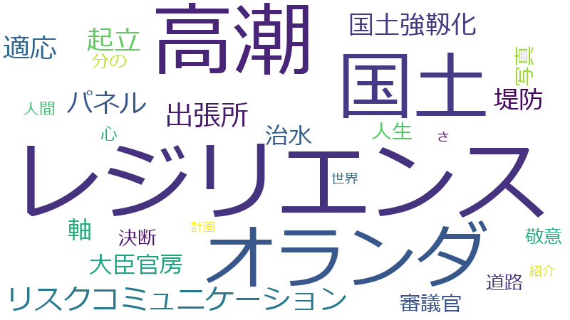

福井照

国土、パネル、レジリエンス、国土強靱化、オランダ、リスクコミュニケーション、分の、軸、適応、高潮、世界、人生、写真、堤防、大臣官房、審議官、心、計画、起立、道路、さ、人間、出張所、敬意、決断、治水、紹介、コミュニケーション、プラス、マネジメント、リスク、令和、厚生労働省、啓、外力、委員会、委員長、情報、昭和、未来、決議、狩野川台風、総理、職員、計算、起草、遊水地、開、SDGs、しなやか、オペレーション、カズオ・イシグロ、ゼロ、チャーター便、ネクスト、パパ、リダンダンシー、一昨年、三カ年、並み、会社、動議、哲学、国交省、国土交通、在留、地方、地球、大切、子供たち、定員、層、山本、志、思想、感染、支給、放水、日本人、時代、査定、災害廃棄物、災害弔慰、狩野川、矜持、被害、路、邦人、頻度、SARS、アダプテーション、インフラストラクチャー、ウイルス、オリンピック、カップ、クラブ、シナリオ、スタジアム、タックル、テムズ
レジリエンス、高潮、国土、オランダ、リスクコミュニケーション、出張所、起立、適応、パネル、国土強靱化、堤防、軸、治水、大臣官房、審議官、人生、写真、決断、道路、敬意、分の、心、人間、世界、紹介、計画、さ
レジリエンス
2020-01-27 account_balance
…おはようございます。自由民主党の福井照でございます。本日は、心と体と人生と国土と地球のレジリエンス、強さとしなやかさ、その手段としてのリスクマネジメント、リスクコミュニケーションについて御質問をしたいと思っております。…
…したいと思っております。通底する質問趣旨は、強さとしなやかさ、強くしなやかな心と体と人生と国土と地球のレジリエンスでございます。まず、総理に伺いたいと思います。中国を始めとする世界各国で急激に拡大しております新型コ…
…本豪雨からのリフレッシュキャンプをしております。この笑顔を見ていただきたいと思います。国土強靱化、心のレジリエンス、国土のレジリエンス、国土強靱化の一翼を担っていただいている証左でございます。改めて、この国立青少年教育…
…シュキャンプをしております。この笑顔を見ていただきたいと思います。国土強靱化、心のレジリエンス、国土のレジリエンス、国土強靱化の一翼を担っていただいている証左でございます。改めて、この国立青少年教育振興機構に敬意を表さ…
…そして、この写真。テムズ川の高潮堤防です。なぜこの写真を使っているかというと、実は、日本人が、この適応、レジリエンスに対して、アダプテーションに対してすごく昔から貢献しているというお話であります。実は、カズオ・イシグロ…
…うことなんです。ですから、一九六〇年から日本人が、北海、イギリスそしてオランダの高潮、洪水対策、国土のレジリエンスに貢献をしてきた。そして、その息子が、人間が世界とつながっているという深い心理の深層をえぐり出して、心の…
…に貢献をしてきた。そして、その息子が、人間が世界とつながっているという深い心理の深層をえぐり出して、心のレジリエンスを確立したという、親子で国土と心と人生のレジリエンスを確立したというすてきな物語なのでございますので、き…
…ながっているという深い心理の深層をえぐり出して、心のレジリエンスを確立したという、親子で国土と心と人生のレジリエンスを確立したというすてきな物語なのでございますので、きょうの御質問は、今、環境省がやろうとしている、小泉環…
…大変ありがとうございました。本日は、レジリエンスについて御質問をさせていただきました。私としましても、引き続き、国土強靱化推進本部において、そして水未来戦略特命委員会において、これからも思想、哲学を追求してまいることを…
高潮
2020-01-27 account_balance
…、再来年度から新しい治水事業を始めることになっておりますが、しかし、一方、この母国のオランダが、一九五三年の高潮水害でいたく被害を受けたものですから、一万分の一にしたんです。一万年に一回の高潮水害でも対応できるように、国…
…国のオランダが、一九五三年の高潮水害でいたく被害を受けたものですから、一万分の一にしたんです。一万年に一回の高潮水害でも対応できるように、国民の命を守るようにということで、外力も、そして考え方も思想も哲学も変えたんです。…
…ていく、これが人類にとって大切なことであります。きょうの質問は適応であります。そして、この写真。テムズ川の高潮堤防です。なぜこの写真を使っているかというと、実は、日本人が、この適応、レジリエンスに対して、アダプテーショ…
…貢献しているというお話であります。実は、カズオ・イシグロのパパは、当時、長崎海洋気象台の博士でありました。高潮の計算においては世界一だった。したがって、一九五三年に、先ほど、オランダが一万分の一にした同じ高潮、洪水被害…
…りました。高潮の計算においては世界一だった。したがって、一九五三年に、先ほど、オランダが一万分の一にした同じ高潮、洪水被害をもって、一九六〇年にカズオ・イシグロのパパを招聘するわけです。高潮計算をして、そしてカズオ・イシ…
…オランダが一万分の一にした同じ高潮、洪水被害をもって、一九六〇年にカズオ・イシグロのパパを招聘するわけです。高潮計算をして、そしてカズオ・イシグロのパパが計算したその外力でこの設計をしたということなんです。ですから、一…
…の外力でこの設計をしたということなんです。ですから、一九六〇年から日本人が、北海、イギリスそしてオランダの高潮、洪水対策、国土のレジリエンスに貢献をしてきた。そして、その息子が、人間が世界とつながっているという深い心理…
国土
2020-01-27 account_balance
…おはようございます。自由民主党の福井照でございます。本日は、心と体と人生と国土と地球のレジリエンス、強さとしなやかさ、その手段としてのリスクマネジメント、リスクコミュニケーションについて御質問をしたいと思っております。…
…について御質問をしたいと思っております。通底する質問趣旨は、強さとしなやかさ、強くしなやかな心と体と人生と国土と地球のレジリエンスでございます。まず、総理に伺いたいと思います。中国を始めとする世界各国で急激に拡大し…
…スクコミュニケーション、リスクマネジメントをよろしくお願い申し上げたいと思います。さて、次に、防災・減災、国土強靱化に関する予算、組織・定員、体制について御質問をさせていただきたいと思います。これは、狩野川放水路の治…
…りませんし、そのためにも、令和三年度以降の予算確保がどうしても絶対不可欠な状況に今立ち至っているということでございますので、まず最初に、国土交通大臣から、令和三年度以降の予算確保につきまして、御決意を賜りたいと存じます。…
…ミュニケーションは成立すらしていなかったということに気づかされたわけであります。そこで、武田防災担当大臣・国土強靱化担当大臣にお伺いをいたします。このリスクコミュニケーション、国と国民とのリスクコミュニケーション。政…
…キャンプ、そして西日本豪雨からのリフレッシュキャンプをしております。この笑顔を見ていただきたいと思います。国土強靱化、心のレジリエンス、国土のレジリエンス、国土強靱化の一翼を担っていただいている証左でございます。改めて…
…のリフレッシュキャンプをしております。この笑顔を見ていただきたいと思います。国土強靱化、心のレジリエンス、国土のレジリエンス、国土強靱化の一翼を担っていただいている証左でございます。改めて、この国立青少年教育振興機構に…
…プをしております。この笑顔を見ていただきたいと思います。国土強靱化、心のレジリエンス、国土のレジリエンス、国土強靱化の一翼を担っていただいている証左でございます。改めて、この国立青少年教育振興機構に敬意を表させていただ…
…青少年教育振興機構に敬意を表させていただきたいと思います。きょうこのパネルを御紹介したのは理由があります。国土強靱化、三層構造で今考えております。一層目は、防災・減災、国土強靱化、海岸堤防、河川堤防をつくる、しかし、絶…
…ょうこのパネルを御紹介したのは理由があります。国土強靱化、三層構造で今考えております。一層目は、防災・減災、国土強靱化、海岸堤防、河川堤防をつくる、しかし、絶望からの心の堤防を築く、これが一層目。そして二層目が、ウオータ…
…人間にかかわる、人生にかかわる全てのインフラストラクチャーのインテグレーテッドマネジメントをするというのが、国土強靱化国民運動の真髄でございます。そこで、質問は、水問題でございます。赤羽国土交通大臣から、この世界の水問…
…ネジメントをするというのが、国土強靱化国民運動の真髄でございます。そこで、質問は、水問題でございます。赤羽国土交通大臣から、この世界の水問題にどのようにタックルしているかということでございますけれども、アプリオリに、私…
…なで考えていこうじゃないかという提起、提案をしようと思っているわけですけれども。それは私の主張でございますけれども、赤羽国土交通大臣から、今の国交省の世界の水問題に対する現状と課題認識、よろしくお願いしたいと思います。…
…ありがとうございました。次のパネルをごらんいただきたいと思います。国土のリダンダンシーについて御質問させていただきます。質問は、国土交通大臣に、今の国土形成計画における計画、目的体系の中でのリダンダンシーはどう位置…
…次のパネルをごらんいただきたいと思います。国土のリダンダンシーについて御質問させていただきます。質問は、国土交通大臣に、今の国土形成計画における計画、目的体系の中でのリダンダンシーはどう位置づけられておりますかという…
…ただきたいと思います。国土のリダンダンシーについて御質問させていただきます。質問は、国土交通大臣に、今の国土形成計画における計画、目的体系の中でのリダンダンシーはどう位置づけられておりますかという質問なんですけれども…
…ーはどう位置づけられておりますかという質問なんですけれども、しかし、言いたいことがありまして、この日本海側の国土軸、太平洋側の国土軸、それやそれを連携するとありますけれども、深い反省があります。この線であるだけの軸という…
…れておりますかという質問なんですけれども、しかし、言いたいことがありまして、この日本海側の国土軸、太平洋側の国土軸、それやそれを連携するとありますけれども、深い反省があります。この線であるだけの軸ということを本当は言いた…
…来の子供たちの人生全体を包む。包むという概念で実はあったんですけれども、それを伝え切れていなかったので、第二国土軸に対する反感、あるいは国土総合計画に対する反感があったわけであります。この仕覆というのは、茶器を包み、そ…
…。包むという概念で実はあったんですけれども、それを伝え切れていなかったので、第二国土軸に対する反感、あるいは国土総合計画に対する反感があったわけであります。この仕覆というのは、茶器を包み、そして茶器を育てるという言葉す…
…な、未来を包み込むような袋をつくる、そういう袋師という仕事を私たちはやっているんだとの自覚も含めて、これから国土計画、国土強靱化国民運動の中で樹立をさせていただきたいと思いますけれども、きょうは、現状の国土形成計画におけ…
…包み込むような袋をつくる、そういう袋師という仕事を私たちはやっているんだとの自覚も含めて、これから国土計画、国土強靱化国民運動の中で樹立をさせていただきたいと思いますけれども、きょうは、現状の国土形成計画におけるリダンダ…
…を私たちはやっているんだとの自覚も含めて、これから国土計画、国土強靱化国民運動の中で樹立をさせていただきたいと思いますけれども、きょうは、現状の国土形成計画におけるリダンダンシーについてのお答えをお願いしたいと思います。…
…をしたということなんです。ですから、一九六〇年から日本人が、北海、イギリスそしてオランダの高潮、洪水対策、国土のレジリエンスに貢献をしてきた。そして、その息子が、人間が世界とつながっているという深い心理の深層をえぐり出…
…子が、人間が世界とつながっているという深い心理の深層をえぐり出して、心のレジリエンスを確立したという、親子で国土と心と人生のレジリエンスを確立したというすてきな物語なのでございますので、きょうの御質問は、今、環境省がやろ…
…りがとうございました。本日は、レジリエンスについて御質問をさせていただきました。私としましても、引き続き、国土強靱化推進本部において、そして水未来戦略特命委員会において、これからも思想、哲学を追求してまいることをお誓い…
オランダ
2020-01-27 account_balance
…これからもお仕事を頑張っていただきたいと思います。私たちは、百五十年前から近代治水事業をやってきました。オランダのデ・レーケという、土木の人間なら知らない人はいません、デ・レーケというお雇い外国人の技術者に教えていただ…
…をやってまいりました。当時は二百分の一でした。二百年に一回の雨に対応するようにということで、テムズ川も、オランダの干拓もやってきました。オランダの堤防もそこでつくってきた。なので、私たちも、今でも二百分の一であります。…
…百分の一でした。二百年に一回の雨に対応するようにということで、テムズ川も、オランダの干拓もやってきました。オランダの堤防もそこでつくってきた。なので、私たちも、今でも二百分の一であります。利根川も淀川も、二百分の一を目標…
…の審議会の答申も待って、再来年度から新しい治水事業を始めることになっておりますが、しかし、一方、この母国のオランダが、一九五三年の高潮水害でいたく被害を受けたものですから、一万分の一にしたんです。一万年に一回の高潮水害で…
…も、そして考え方も思想も哲学も変えたんです。このことに思いをいたさなければ私たちはならないと思います。再びオランダにリスクマネジメント、リスクコミュニケーションを学ぶ時期が来たということで、過信は安全の敵だという基本原則…
…時、長崎海洋気象台の博士でありました。高潮の計算においては世界一だった。したがって、一九五三年に、先ほど、オランダが一万分の一にした同じ高潮、洪水被害をもって、一九六〇年にカズオ・イシグロのパパを招聘するわけです。高潮計…
…算したその外力でこの設計をしたということなんです。ですから、一九六〇年から日本人が、北海、イギリスそしてオランダの高潮、洪水対策、国土のレジリエンスに貢献をしてきた。そして、その息子が、人間が世界とつながっているという…
リスクコミュニケーション
2020-01-27 account_balance
…は、心と体と人生と国土と地球のレジリエンス、強さとしなやかさ、その手段としてのリスクマネジメント、リスクコミュニケーションについて御質問をしたいと思っております。通底する質問趣旨は、強さとしなやかさ、強くしなやかな心と…
…おられる外務省の職員の皆さんにも敬意と感謝を申し上げたいと思います。引き続き、万全の危機管理体制、リスクコミュニケーション、リスクマネジメントをよろしくお願い申し上げたいと思います。さて、次に、防災・減災、国土強靱化に…
…です。このことに思いをいたさなければ私たちはならないと思います。再びオランダにリスクマネジメント、リスクコミュニケーションを学ぶ時期が来たということで、過信は安全の敵だという基本原則にのっとってリスクマネジメントをしなけ…
…ス・ツー・フェースで情報を交換する、気づきと気づきのコミュニケーションをするということでなければ、リスクコミュニケーションは成立すらしていなかったということに気づかされたわけであります。そこで、武田防災担当大臣・国土強…
…かされたわけであります。そこで、武田防災担当大臣・国土強靱化担当大臣にお伺いをいたします。このリスクコミュニケーション、国と国民とのリスクコミュニケーション。政治はコミュニケーションなり、コミュニケーションだけである…
…防災担当大臣・国土強靱化担当大臣にお伺いをいたします。このリスクコミュニケーション、国と国民とのリスクコミュニケーション。政治はコミュニケーションなり、コミュニケーションだけであると言ってもいい。その中で最も大事な命を…
…ニケーション。政治はコミュニケーションなり、コミュニケーションだけであると言ってもいい。その中で最も大事な命を守るためのリスクコミュニケーション、今、国として、大臣としてどのようにお考えか、御紹介いただければと思います。…
出張所
2020-01-27 account_balance
…ども、これは道路啓開。私ども、現場人間の矜持がございます。実は、三・一一の二十四時までに全道路啓開チームを出張所ベースで発車させることができた、これが私たちの矜持なんです。どういうことか。内陸部にあります盛岡国道工事…
…で発車させることができた、これが私たちの矜持なんです。どういうことか。内陸部にあります盛岡国道工事事務所の出張所、幾つかありますけれども、各出張所長が、携帯は通じない、雪は降っている、寒いという中で、ふだん道路維持管理…
…たちの矜持なんです。どういうことか。内陸部にあります盛岡国道工事事務所の出張所、幾つかありますけれども、各出張所長が、携帯は通じない、雪は降っている、寒いという中で、ふだん道路維持管理をしている会社の社長を見つけ出し、…
…ありがたいです、本当に官民一体、官民一如と私は申し上げております、官も民もない一如である。そのとうとい志、出張所長の志、その会社の社長さん、そして実際にオペレーションに当たった社員の志に私たちは応える必要があります。…
…ましたけれども、もう本当にありがたいと思ったんです。いや、本当にありがとうと彼にも言ったんです。今、全国の出張所、テレビを見ています。全国の国交省の職員も見ています。本当に、見えないところで苦労しています。だけれども、…
起立
2019-05-24 account_balance
…。災害弔慰金の支給等に関する法律の一部を改正する法律案起草の件につきましては、お手元に配付しておりますとおりの起草案を委員会の成案とし、これを委員会提出法律案と決するに賛成の諸君の起立を求めます。〔賛成者起立〕…
…。災害弔慰金の支給等に関する法律の一部を改正する法律案起草の件につきましては、お手元に配付しておりますとおりの起草案を委員会の成案とし、これを委員会提出法律案と決するに賛成の諸君の起立を求めます。〔賛成者起立〕…
起立総員。よって、そのように決しました。なお、ただいま決定いたしました本法律案の提出手続等につきましては、委員長に御一任願いたいと存じますが、御異議ありませんか。〔「異議なし」と呼ぶ者あり〕
これにて趣旨の説明は終わりました。採決いたします。本動議に賛成の諸君の起立を求めます。〔賛成者起立〕
起立総員。よって、本件は本委員会の決議とすることに決しました。この際、本決議に対し、政府から発言を求められておりますので、これを許します。山本防災担当大臣。
適応
2020-01-27 account_balance
…きまして、小泉環境大臣にお伺いをさせていただきたいと思います。パネルをごらんいただきたいと思います。この適応。もちろん、ゼロ炭素社会に向かうわけですけれども、もう一つの柱は適応であります、アダプテーション。ですから、…
…ルをごらんいただきたいと思います。この適応。もちろん、ゼロ炭素社会に向かうわけですけれども、もう一つの柱は適応であります、アダプテーション。ですから、緩和と適応、緩和と適応、右足、左足、右足、左足、時にシンコペーション…
…ろん、ゼロ炭素社会に向かうわけですけれども、もう一つの柱は適応であります、アダプテーション。ですから、緩和と適応、緩和と適応、右足、左足、右足、左足、時にシンコペーション、時にリズムを持ってこの二つを進めていく、これが人…
…素社会に向かうわけですけれども、もう一つの柱は適応であります、アダプテーション。ですから、緩和と適応、緩和と適応、右足、左足、右足、左足、時にシンコペーション、時にリズムを持ってこの二つを進めていく、これが人類にとって大…
…コペーション、時にリズムを持ってこの二つを進めていく、これが人類にとって大切なことであります。きょうの質問は適応であります。そして、この写真。テムズ川の高潮堤防です。なぜこの写真を使っているかというと、実は、日本人が、…
…ります。そして、この写真。テムズ川の高潮堤防です。なぜこの写真を使っているかというと、実は、日本人が、この適応、レジリエンスに対して、アダプテーションに対してすごく昔から貢献しているというお話であります。実は、カズオ…
…、親子で国土と心と人生のレジリエンスを確立したというすてきな物語なのでございますので、きょうの御質問は、今、環境省がやろうとしている、小泉環境大臣がやろうとしているこの適応について御紹介いただければというふうに思います。…
パネル
2020-01-27 account_balance
…関する予算、組織・定員、体制について御質問をさせていただきたいと思います。これは、狩野川放水路の治水効果のパネルでございます。台風十九号が来る前に、狩野川台風並み、狩野川台風並み、狩野川台風並みということで、事前の情…
…路、昭和四十年に完成をしましたけれども、狩野川放水路を始め治水事業の成果が出たということでございます。次のパネルもごらんいただきたいと思います。同じく台風十九号における八ツ場ダムの事例でございます。ためる方向の、湖の…
…万立米を貯留することができまして、この利根川本川の八斗島の水位を約一メーター低下することができました。次のパネルもごらんいただきたいと思います。十月十三日にラグビーワールドカップを行いました日産スタジアムのところは、…
…るということで、戦後も、そして百五十年前からも、我々は治水事業を進めてきたところでございます。しかし、次のパネルは、気候変動シナリオ、二度Ｃ以上上昇いたしますと、降雨量が一・一倍になる、流量が一・二倍になる、洪水発生頻…
…だというふうに思っているわけでございますので、引き続きの御指導をよろしくお願い申し上げたいと思います。次のパネルをごらんいただきたいと思いますが、予算があっても、体制、組織・定員がないといけないというお話でございますけ…
…ありがとうございました。では、次のパネルをごらんいただきたいと思います。国立青少年教育振興機構のお世話になりまして、子供たちが、みんな被災者です、東日本大震災からのリフレッシュキャンプ、そして西日本豪雨からのリフレッ…
…いる証左でございます。改めて、この国立青少年教育振興機構に敬意を表させていただきたいと思います。きょうこのパネルを御紹介したのは理由があります。国土強靱化、三層構造で今考えております。一層目は、防災・減災、国土強靱化、…
…ありがとうございました。次のパネルをごらんいただきたいと思います。国土のリダンダンシーについて御質問させていただきます。質問は、国土交通大臣に、今の国土形成計画における計画、目的体系の中でのリダンダンシーはどう位置…
…臣、済みません、ちょっと次回に回させていただきまして、小泉環境大臣にお伺いをさせていただきたいと思います。パネルをごらんいただきたいと思います。この適応。もちろん、ゼロ炭素社会に向かうわけですけれども、もう一つの柱は…
国土強靱化
2020-01-27 account_balance
…クコミュニケーション、リスクマネジメントをよろしくお願い申し上げたいと思います。さて、次に、防災・減災、国土強靱化に関する予算、組織・定員、体制について御質問をさせていただきたいと思います。これは、狩野川放水路の治水…
…ュニケーションは成立すらしていなかったということに気づかされたわけであります。そこで、武田防災担当大臣・国土強靱化担当大臣にお伺いをいたします。このリスクコミュニケーション、国と国民とのリスクコミュニケーション。政治…
…ャンプ、そして西日本豪雨からのリフレッシュキャンプをしております。この笑顔を見ていただきたいと思います。国土強靱化、心のレジリエンス、国土のレジリエンス、国土強靱化の一翼を担っていただいている証左でございます。改めて、…
…をしております。この笑顔を見ていただきたいと思います。国土強靱化、心のレジリエンス、国土のレジリエンス、国土強靱化の一翼を担っていただいている証左でございます。改めて、この国立青少年教育振興機構に敬意を表させていただき…
…少年教育振興機構に敬意を表させていただきたいと思います。きょうこのパネルを御紹介したのは理由があります。国土強靱化、三層構造で今考えております。一層目は、防災・減災、国土強靱化、海岸堤防、河川堤防をつくる、しかし、絶望…
…うこのパネルを御紹介したのは理由があります。国土強靱化、三層構造で今考えております。一層目は、防災・減災、国土強靱化、海岸堤防、河川堤防をつくる、しかし、絶望からの心の堤防を築く、これが一層目。そして二層目が、ウオーター…
…間にかかわる、人生にかかわる全てのインフラストラクチャーのインテグレーテッドマネジメントをするというのが、国土強靱化国民運動の真髄でございます。そこで、質問は、水問題でございます。赤羽国土交通大臣から、この世界の水問題…
…み込むような袋をつくる、そういう袋師という仕事を私たちはやっているんだとの自覚も含めて、これから国土計画、国土強靱化国民運動の中で樹立をさせていただきたいと思いますけれども、きょうは、現状の国土形成計画におけるリダンダン…
…がとうございました。本日は、レジリエンスについて御質問をさせていただきました。私としましても、引き続き、国土強靱化推進本部において、そして水未来戦略特命委員会において、これからも思想、哲学を追求してまいることをお誓いを…
堤防
2020-01-27 account_balance
…和三十三年には亡くなった方、行方不明の方が八百五十三人出たにもかかわらず、今回は犠牲者はゼロでした。そして、堤防決壊が十四カ所でしたけれども、今回はゼロカ所でした。家屋浸水が六千七百七十五戸、昭和三十三年、出ましたけれど…
…て、なおかつ日産スタジアムでラグビーワールドカップもできたということでございます。ダムも、遊水地も、そして堤防も、やることは全てやる、できることは全てやるということで、戦後も、そして百五十年前からも、我々は治水事業を進…
…でした。二百年に一回の雨に対応するようにということで、テムズ川も、オランダの干拓もやってきました。オランダの堤防もそこでつくってきた。なので、私たちも、今でも二百分の一であります。利根川も淀川も、二百分の一を目標にやって…
…御紹介したのは理由があります。国土強靱化、三層構造で今考えております。一層目は、防災・減災、国土強靱化、海岸堤防、河川堤防をつくる、しかし、絶望からの心の堤防を築く、これが一層目。そして二層目が、ウオーターイシューズ、世…
…のは理由があります。国土強靱化、三層構造で今考えております。一層目は、防災・減災、国土強靱化、海岸堤防、河川堤防をつくる、しかし、絶望からの心の堤防を築く、これが一層目。そして二層目が、ウオーターイシューズ、世界の水問題…
…構造で今考えております。一層目は、防災・減災、国土強靱化、海岸堤防、河川堤防をつくる、しかし、絶望からの心の堤防を築く、これが一層目。そして二層目が、ウオーターイシューズ、世界の水問題に日本がリードしてタックルする。そし…
…く、これが人類にとって大切なことであります。きょうの質問は適応であります。そして、この写真。テムズ川の高潮堤防です。なぜこの写真を使っているかというと、実は、日本人が、この適応、レジリエンスに対して、アダプテーションに…
軸
2020-01-27 account_balance
…はどう位置づけられておりますかという質問なんですけれども、しかし、言いたいことがありまして、この日本海側の国土軸、太平洋側の国土軸、それやそれを連携するとありますけれども、深い反省があります。この線であるだけの軸というこ…
…ておりますかという質問なんですけれども、しかし、言いたいことがありまして、この日本海側の国土軸、太平洋側の国土軸、それやそれを連携するとありますけれども、深い反省があります。この線であるだけの軸ということを本当は言いたか…
…海側の国土軸、太平洋側の国土軸、それやそれを連携するとありますけれども、深い反省があります。この線であるだけの軸ということを本当は言いたかったわけじゃなかったんです、実は。ということで、仕覆ってありますけれども、お茶を…
…んです、実は。ということで、仕覆ってありますけれども、お茶をやられている方は御存じの、お仕覆の仕覆です。この軸と軸が国全体を、そして未来の子供たちの人生全体を包む。包むという概念で実はあったんですけれども、それを伝え切…
…す、実は。ということで、仕覆ってありますけれども、お茶をやられている方は御存じの、お仕覆の仕覆です。この軸と軸が国全体を、そして未来の子供たちの人生全体を包む。包むという概念で実はあったんですけれども、それを伝え切れて…
…の子供たちの人生全体を包む。包むという概念で実はあったんですけれども、それを伝え切れていなかったので、第二国土軸に対する反感、あるいは国土総合計画に対する反感があったわけであります。この仕覆というのは、茶器を包み、そし…
…味でもあり、そして、将来の、未来の日本を、日本人の人生を育てるという意味まで含んでいるわけでございます。この軸という言葉を超えて日本全体を包み込むような、未来を包み込むような袋をつくる、そういう袋師という仕事を私たちは…
治水
2020-01-27 account_balance
…土強靱化に関する予算、組織・定員、体制について御質問をさせていただきたいと思います。これは、狩野川放水路の治水効果のパネルでございます。台風十九号が来る前に、狩野川台風並み、狩野川台風並み、狩野川台風並みということで…
…千三百戸にとどまることができました。この狩野川放水路、昭和四十年に完成をしましたけれども、狩野川放水路を始め治水事業の成果が出たということでございます。次のパネルもごらんいただきたいと思います。同じく台風十九号におけ…
…、そして堤防も、やることは全てやる、できることは全てやるということで、戦後も、そして百五十年前からも、我々は治水事業を進めてきたところでございます。しかし、次のパネルは、気候変動シナリオ、二度Ｃ以上上昇いたしますと、降…
…外力の計算も上げなければならないという今現状にあるわけでございます。したがいまして、令和三年度以降、新しい治水対策を始めなければなりませんし、そのためにも、令和三年度以降の予算確保がどうしても絶対不可欠な状況に今立ち至…
…、一人じゃありません。どうかこれからもお仕事を頑張っていただきたいと思います。私たちは、百五十年前から近代治水事業をやってきました。オランダのデ・レーケという、土木の人間なら知らない人はいません、デ・レーケというお雇い…
…先ほど大臣からおっしゃっていただきましたような、外力を上げる、その審議会の答申も待って、再来年度から新しい治水事業を始めることになっておりますが、しかし、一方、この母国のオランダが、一九五三年の高潮水害でいたく被害を受…
大臣官房
2019-05-24 account_balance
…す。この際、お諮りいたします。本件調査のため、本日、政府参考人として内閣府政策統括官海堀安喜君、総務省大臣官房審議官多田健一郎君、総務省自治行政局公務員部長大村慎一君、文部科学省大臣官房審議官岡村直子君、厚生労働省大…
…府政策統括官海堀安喜君、総務省大臣官房審議官多田健一郎君、総務省自治行政局公務員部長大村慎一君、文部科学省大臣官房審議官岡村直子君、厚生労働省大臣官房審議官八神敦雄君、厚生労働省大臣官房審議官諏訪園健司君、厚生労働省大臣…
…房審議官多田健一郎君、総務省自治行政局公務員部長大村慎一君、文部科学省大臣官房審議官岡村直子君、厚生労働省大臣官房審議官八神敦雄君、厚生労働省大臣官房審議官諏訪園健司君、厚生労働省大臣官房審議官山本麻里君、厚生労働省社会…
…局公務員部長大村慎一君、文部科学省大臣官房審議官岡村直子君、厚生労働省大臣官房審議官八神敦雄君、厚生労働省大臣官房審議官諏訪園健司君、厚生労働省大臣官房審議官山本麻里君、厚生労働省社会・援護局障害保健福祉部長橋本泰宏君、…
…官房審議官岡村直子君、厚生労働省大臣官房審議官八神敦雄君、厚生労働省大臣官房審議官諏訪園健司君、厚生労働省大臣官房審議官山本麻里君、厚生労働省社会・援護局障害保健福祉部長橋本泰宏君、経済産業省大臣官房審議官島田勘資君、資…
…園健司君、厚生労働省大臣官房審議官山本麻里君、厚生労働省社会・援護局障害保健福祉部長橋本泰宏君、経済産業省大臣官房審議官島田勘資君、資源エネルギー庁電力・ガス事業部長村瀬佳史君及び国土交通省北海道局長和泉晶裕君の出席を求…
審議官
2019-05-24 account_balance
…この際、お諮りいたします。本件調査のため、本日、政府参考人として内閣府政策統括官海堀安喜君、総務省大臣官房審議官多田健一郎君、総務省自治行政局公務員部長大村慎一君、文部科学省大臣官房審議官岡村直子君、厚生労働省大臣官房…
…統括官海堀安喜君、総務省大臣官房審議官多田健一郎君、総務省自治行政局公務員部長大村慎一君、文部科学省大臣官房審議官岡村直子君、厚生労働省大臣官房審議官八神敦雄君、厚生労働省大臣官房審議官諏訪園健司君、厚生労働省大臣官房審…
…官多田健一郎君、総務省自治行政局公務員部長大村慎一君、文部科学省大臣官房審議官岡村直子君、厚生労働省大臣官房審議官八神敦雄君、厚生労働省大臣官房審議官諏訪園健司君、厚生労働省大臣官房審議官山本麻里君、厚生労働省社会・援護…
…員部長大村慎一君、文部科学省大臣官房審議官岡村直子君、厚生労働省大臣官房審議官八神敦雄君、厚生労働省大臣官房審議官諏訪園健司君、厚生労働省大臣官房審議官山本麻里君、厚生労働省社会・援護局障害保健福祉部長橋本泰宏君、経済産…
…議官岡村直子君、厚生労働省大臣官房審議官八神敦雄君、厚生労働省大臣官房審議官諏訪園健司君、厚生労働省大臣官房審議官山本麻里君、厚生労働省社会・援護局障害保健福祉部長橋本泰宏君、経済産業省大臣官房審議官島田勘資君、資源エネ…
…君、厚生労働省大臣官房審議官山本麻里君、厚生労働省社会・援護局障害保健福祉部長橋本泰宏君、経済産業省大臣官房審議官島田勘資君、資源エネルギー庁電力・ガス事業部長村瀬佳史君及び国土交通省北海道局長和泉晶裕君の出席を求め、説…
人生
2020-01-27 account_balance
…おはようございます。自由民主党の福井照でございます。本日は、心と体と人生と国土と地球のレジリエンス、強さとしなやかさ、その手段としてのリスクマネジメント、リスクコミュニケーションについて御質問をしたいと思っております。…
…ションについて御質問をしたいと思っております。通底する質問趣旨は、強さとしなやかさ、強くしなやかな心と体と人生と国土と地球のレジリエンスでございます。まず、総理に伺いたいと思います。中国を始めとする世界各国で急激に…
…ルする。そして三層目が、思想、哲学も含めた、ハードもソフトも、全てのインフラストラクチャー、人間にかかわる、人生にかかわる全てのインフラストラクチャーのインテグレーテッドマネジメントをするというのが、国土強靱化国民運動の…
…ますけれども、お茶をやられている方は御存じの、お仕覆の仕覆です。この軸と軸が国全体を、そして未来の子供たちの人生全体を包む。包むという概念で実はあったんですけれども、それを伝え切れていなかったので、第二国土軸に対する反感…
…るという言葉すらあります。災害を伝え、記憶を伝えるという意味でもあり、そして、将来の、未来の日本を、日本人の人生を育てるという意味まで含んでいるわけでございます。この軸という言葉を超えて日本全体を包み込むような、未来を…
…が世界とつながっているという深い心理の深層をえぐり出して、心のレジリエンスを確立したという、親子で国土と心と人生のレジリエンスを確立したというすてきな物語なのでございますので、きょうの御質問は、今、環境省がやろうとしてい…
写真
2020-01-27 account_balance
…んいただきたいと思います。同じく台風十九号における八ツ場ダムの事例でございます。ためる方向の、湖の方からの写真でございます。出水前、令和元年の十月十一日の写真が上で、十七日の午後四時の写真が満水時の下の写真でございま…
…る八ツ場ダムの事例でございます。ためる方向の、湖の方からの写真でございます。出水前、令和元年の十月十一日の写真が上で、十七日の午後四時の写真が満水時の下の写真でございます。この水位、約五十四メーター上がりまして、七千五…
…。ためる方向の、湖の方からの写真でございます。出水前、令和元年の十月十一日の写真が上で、十七日の午後四時の写真が満水時の下の写真でございます。この水位、約五十四メーター上がりまして、七千五百万トン、七千五百万立米を貯留…
…の方からの写真でございます。出水前、令和元年の十月十一日の写真が上で、十七日の午後四時の写真が満水時の下の写真でございます。この水位、約五十四メーター上がりまして、七千五百万トン、七千五百万立米を貯留することができまし…
…てこの二つを進めていく、これが人類にとって大切なことであります。きょうの質問は適応であります。そして、この写真。テムズ川の高潮堤防です。なぜこの写真を使っているかというと、実は、日本人が、この適応、レジリエンスに対して…
…って大切なことであります。きょうの質問は適応であります。そして、この写真。テムズ川の高潮堤防です。なぜこの写真を使っているかというと、実は、日本人が、この適応、レジリエンスに対して、アダプテーションに対してすごく昔から…
決断
2020-01-27 account_balance
…大災害に匹敵するものだと思っております。昨日から、邦人帰国のための飛行機、チャーター便のオペレーションの御決断のニュースに接しました。総理の御決断に改めて敬意と感謝をささげたいと思います。私たちは、学校から家に帰って…
…す。昨日から、邦人帰国のための飛行機、チャーター便のオペレーションの御決断のニュースに接しました。総理の御決断に改めて敬意と感謝をささげたいと思います。私たちは、学校から家に帰ってきた子供たちのただいまという声を聞く…
…っております。危機対応は、想定外に負けない、屈しない、知的弾力性を発揮する、いかなる事態にも瞬時に判断して決断するということが大事でございます。安倍総理の完璧なまでのこれまでのリーダーシップに敬意を表します。改めて、…
…ども、昨日からの、チャーター便の活用などによって、現地在留邦人のうち希望される方全員の帰国を支援するという御決断に至ったわけでございます。本当にすばらしい御決断だと思います。そこで、チャーター便のオペレーションを含めて…
…、現地在留邦人のうち希望される方全員の帰国を支援するという御決断に至ったわけでございます。本当にすばらしい御決断だと思います。そこで、チャーター便のオペレーションを含めて、日本国政府として、在留邦人が安全に帰ってこられ…
道路
2020-01-27 account_balance
…だきたいと思いますが、予算があっても、体制、組織・定員がないといけないというお話でございますけれども、これは道路啓開。私ども、現場人間の矜持がございます。実は、三・一一の二十四時までに全道路啓開チームを出張所ベースで発…
…でございますけれども、これは道路啓開。私ども、現場人間の矜持がございます。実は、三・一一の二十四時までに全道路啓開チームを出張所ベースで発車させることができた、これが私たちの矜持なんです。どういうことか。内陸部にあり…
…事務所の出張所、幾つかありますけれども、各出張所長が、携帯は通じない、雪は降っている、寒いという中で、ふだん道路維持管理をしている会社の社長を見つけ出し、そして頼み、よっしゃ、行きましょうと言ってくださる。そして、道路…
…道路維持管理をしている会社の社長を見つけ出し、そして頼み、よっしゃ、行きましょうと言ってくださる。そして、道路啓開といっても、ごらんのように一面の災害廃棄物の海です。どこが道路法線かわからない。ふだん道路維持管理をして…
…、行きましょうと言ってくださる。そして、道路啓開といっても、ごらんのように一面の災害廃棄物の海です。どこが道路法線かわからない。ふだん道路維持管理をしていなければ絶対にわからないというその空間意識の中で、災害廃棄物をよ…
…る。そして、道路啓開といっても、ごらんのように一面の災害廃棄物の海です。どこが道路法線かわからない。ふだん道路維持管理をしていなければ絶対にわからないというその空間意識の中で、災害廃棄物をよっこして、そして、御遺体もよ…
…とう、ありがとう、もう帰っていいからと言ったら、何をおっしゃっているんですか、私たちは今から南北の直轄国道の道路啓開に当たりますと言ってくれたという、本当にありがたいです、本当に官民一体、官民一如と私は申し上げております…
敬意
2020-01-27 account_balance
…ら、邦人帰国のための飛行機、チャーター便のオペレーションの御決断のニュースに接しました。総理の御決断に改めて敬意と感謝をささげたいと思います。私たちは、学校から家に帰ってきた子供たちのただいまという声を聞くことがいかに…
…揮する、いかなる事態にも瞬時に判断して決断するということが大事でございます。安倍総理の完璧なまでのこれまでのリーダーシップに敬意を表します。改めて、今般の事態に対する総理の御見解をお伺いをさせていただきたいと思います。…
…ありがとうございました。いずれ飛ぶことになる飛行機の乗組員の皆さんに感謝と敬意を申し上げたいと思います。そして、今大臣からも御紹介ありました、現地に詰めておられる外務省の職員の皆さんにも敬意と感謝を申し上げたいと思いま…
…を申し上げたいと思います。そして、今大臣からも御紹介ありました、現地に詰めておられる外務省の職員の皆さんにも敬意と感謝を申し上げたいと思います。引き続き、万全の危機管理体制、リスクコミュニケーション、リスクマネジメントを…
…のレジリエンス、国土強靱化の一翼を担っていただいている証左でございます。改めて、この国立青少年教育振興機構に敬意を表させていただきたいと思います。きょうこのパネルを御紹介したのは理由があります。国土強靱化、三層構造で今…
分の
2020-01-27 account_balance
…ケというお雇い外国人の技術者に教えていただきながら、淀川、木曽川、砂防工事をやってまいりました。当時は二百分の一でした。二百年に一回の雨に対応するようにということで、テムズ川も、オランダの干拓もやってきました。オランダ…
…テムズ川も、オランダの干拓もやってきました。オランダの堤防もそこでつくってきた。なので、私たちも、今でも二百分の一であります。利根川も淀川も、二百分の一を目標にやってきました。しかし、実力はまだ、どうでしょうか、六十分の…
…した。オランダの堤防もそこでつくってきた。なので、私たちも、今でも二百分の一であります。利根川も淀川も、二百分の一を目標にやってきました。しかし、実力はまだ、どうでしょうか、六十分の一、七十分の一ぐらいの実力しかありませ…
…分の一であります。利根川も淀川も、二百分の一を目標にやってきました。しかし、実力はまだ、どうでしょうか、六十分の一、七十分の一ぐらいの実力しかありません。先ほど大臣からおっしゃっていただきましたような、外力を上げる、そ…
…ます。利根川も淀川も、二百分の一を目標にやってきました。しかし、実力はまだ、どうでしょうか、六十分の一、七十分の一ぐらいの実力しかありません。先ほど大臣からおっしゃっていただきましたような、外力を上げる、その審議会の答…
…ておりますが、しかし、一方、この母国のオランダが、一九五三年の高潮水害でいたく被害を受けたものですから、一万分の一にしたんです。一万年に一回の高潮水害でも対応できるように、国民の命を守るようにということで、外力も、そして…
…気象台の博士でありました。高潮の計算においては世界一だった。したがって、一九五三年に、先ほど、オランダが一万分の一にした同じ高潮、洪水被害をもって、一九六〇年にカズオ・イシグロのパパを招聘するわけです。高潮計算をして、そ…
心
2020-01-27 account_balance
…おはようございます。自由民主党の福井照でございます。本日は、心と体と人生と国土と地球のレジリエンス、強さとしなやかさ、その手段としてのリスクマネジメント、リスクコミュニケーションについて御質問をしたいと思っております。…
…ミュニケーションについて御質問をしたいと思っております。通底する質問趣旨は、強さとしなやかさ、強くしなやかな心と体と人生と国土と地球のレジリエンスでございます。まず、総理に伺いたいと思います。中国を始めとする世界各…
…して、訪日中国人の数は二十倍以上にふえております。リピーターは団体旅行をしないでしょうから、日本での感染拡大が心配をされます。地球規模で人が移動しているこの時代に、感染症はまさに巨大災害に匹敵するものだと思っております。…
…。気づきと気づきのコミュニケーションが大切だと思っております。国民一人一人に、国が何をやっているのか、国が何を心配していただいているのかということを気づいていただく、国民に気づいていただくまで、正確に徹底した情報の、プッ…
…す。そこで、チャーター便のオペレーションを含めて、日本国政府として、在留邦人が安全に帰ってこられる、そして安心をしていただくためにいかなる取組を進めていらっしゃるのか、中国政府とどのように交渉していらっしゃるのか、茂木…
…そして西日本豪雨からのリフレッシュキャンプをしております。この笑顔を見ていただきたいと思います。国土強靱化、心のレジリエンス、国土のレジリエンス、国土強靱化の一翼を担っていただいている証左でございます。改めて、この国立…
…、三層構造で今考えております。一層目は、防災・減災、国土強靱化、海岸堤防、河川堤防をつくる、しかし、絶望からの心の堤防を築く、これが一層目。そして二層目が、ウオーターイシューズ、世界の水問題に日本がリードしてタックルする…
…の高潮、洪水対策、国土のレジリエンスに貢献をしてきた。そして、その息子が、人間が世界とつながっているという深い心理の深層をえぐり出して、心のレジリエンスを確立したという、親子で国土と心と人生のレジリエンスを確立したという…
…ジリエンスに貢献をしてきた。そして、その息子が、人間が世界とつながっているという深い心理の深層をえぐり出して、心のレジリエンスを確立したという、親子で国土と心と人生のレジリエンスを確立したというすてきな物語なのでございま…
…、人間が世界とつながっているという深い心理の深層をえぐり出して、心のレジリエンスを確立したという、親子で国土と心と人生のレジリエンスを確立したというすてきな物語なのでございますので、きょうの御質問は、今、環境省がやろうと…
人間
2020-01-27 account_balance
…算があっても、体制、組織・定員がないといけないというお話でございますけれども、これは道路啓開。私ども、現場人間の矜持がございます。実は、三・一一の二十四時までに全道路啓開チームを出張所ベースで発車させることができた、こ…
…三千人いたんですが、今、二万人を切っているという状況であります。今回、査定をしていただきました。地方整備局の人間を百一人プラス。マイナスであって当然、ふえてもプラマイ・ゼロという見込みの中で、プラス百一人という査定をして…
…きたいと思います。私たちは、百五十年前から近代治水事業をやってきました。オランダのデ・レーケという、土木の人間なら知らない人はいません、デ・レーケというお雇い外国人の技術者に教えていただきながら、淀川、木曽川、砂防工事…
…リードしてタックルする。そして三層目が、思想、哲学も含めた、ハードもソフトも、全てのインフラストラクチャー、人間にかかわる、人生にかかわる全てのインフラストラクチャーのインテグレーテッドマネジメントをするというのが、国土…
…人が、北海、イギリスそしてオランダの高潮、洪水対策、国土のレジリエンスに貢献をしてきた。そして、その息子が、人間が世界とつながっているという深い心理の深層をえぐり出して、心のレジリエンスを確立したという、親子で国土と心と…
世界
2020-01-27 account_balance
…かな心と体と人生と国土と地球のレジリエンスでございます。まず、総理に伺いたいと思います。中国を始めとする世界各国で急激に拡大しております新型コロナウイルスに関連する感染症についてお伺いをさせていただきたいと思います。…
…きたいと思います。日本においても四名の患者が確認をされております。一月二十二日から二十三日に開催されました世界保健機関の緊急委員会においても、国際的に懸念される公衆衛生上の緊急事態としての宣言は見送られたものの、各国に…
…防、河川堤防をつくる、しかし、絶望からの心の堤防を築く、これが一層目。そして二層目が、ウオーターイシューズ、世界の水問題に日本がリードしてタックルする。そして三層目が、思想、哲学も含めた、ハードもソフトも、全てのインフラ…
…のが、国土強靱化国民運動の真髄でございます。そこで、質問は、水問題でございます。赤羽国土交通大臣から、この世界の水問題にどのようにタックルしているかということでございますけれども、アプリオリに、私は、十月十九日、二十日…
…っているんです。二〇三〇年目標ですから、まだまだ、もっと先、そうなんです、そうなんですけれども、この日本が世界の水問題をリードしているという矜持から、ＳＤＧｓネクストはやはり日本発でなければならないと思っております。…
…なで考えていこうじゃないかという提起、提案をしようと思っているわけですけれども。それは私の主張でございますけれども、赤羽国土交通大臣から、今の国交省の世界の水問題に対する現状と課題認識、よろしくお願いしたいと思います。…
…話であります。実は、カズオ・イシグロのパパは、当時、長崎海洋気象台の博士でありました。高潮の計算においては世界一だった。したがって、一九五三年に、先ほど、オランダが一万分の一にした同じ高潮、洪水被害をもって、一九六〇年…
…北海、イギリスそしてオランダの高潮、洪水対策、国土のレジリエンスに貢献をしてきた。そして、その息子が、人間が世界とつながっているという深い心理の深層をえぐり出して、心のレジリエンスを確立したという、親子で国土と心と人生の…
紹介
2020-01-27 account_balance
…た。いずれ飛ぶことになる飛行機の乗組員の皆さんに感謝と敬意を申し上げたいと思います。そして、今大臣からも御紹介ありました、現地に詰めておられる外務省の職員の皆さんにも敬意と感謝を申し上げたいと思います。引き続き、万全の…
…という見込みの中で、プラス百一人という査定をしていただきました。本当にありがとうございました。そこで、きょうは政策統括官にお越しをいただきました。今までの行革、そして現在のスタンスについて御紹介いただければと思います。…
…ニケーション。政治はコミュニケーションなり、コミュニケーションだけであると言ってもいい。その中で最も大事な命を守るためのリスクコミュニケーション、今、国として、大臣としてどのようにお考えか、御紹介いただければと思います。…
…ございます。改めて、この国立青少年教育振興機構に敬意を表させていただきたいと思います。きょうこのパネルを御紹介したのは理由があります。国土強靱化、三層構造で今考えております。一層目は、防災・減災、国土強靱化、海岸堤防、…
…、親子で国土と心と人生のレジリエンスを確立したというすてきな物語なのでございますので、きょうの御質問は、今、環境省がやろうとしている、小泉環境大臣がやろうとしているこの適応について御紹介いただければというふうに思います。…
計画
2020-01-27 account_balance
…ありがとうございます。勝負はことしだと一昨年の暮れから思っておりました。一昨年の暮れに緊急三カ年対策、計画を樹立をしていただきました。事業費七兆円、国費三・五兆円、そして、今、きょうから御審議いただく補正予算も加えます…
…いと思います。国土のリダンダンシーについて御質問させていただきます。質問は、国土交通大臣に、今の国土形成計画における計画、目的体系の中でのリダンダンシーはどう位置づけられておりますかという質問なんですけれども、しかし…
…。国土のリダンダンシーについて御質問させていただきます。質問は、国土交通大臣に、今の国土形成計画における計画、目的体系の中でのリダンダンシーはどう位置づけられておりますかという質問なんですけれども、しかし、言いたいこ…
…いう概念で実はあったんですけれども、それを伝え切れていなかったので、第二国土軸に対する反感、あるいは国土総合計画に対する反感があったわけであります。この仕覆というのは、茶器を包み、そして茶器を育てるという言葉すらありま…
…未来を包み込むような袋をつくる、そういう袋師という仕事を私たちはやっているんだとの自覚も含めて、これから国土計画、国土強靱化国民運動の中で樹立をさせていただきたいと思いますけれども、きょうは、現状の国土形成計画におけるリ…
…を私たちはやっているんだとの自覚も含めて、これから国土計画、国土強靱化国民運動の中で樹立をさせていただきたいと思いますけれども、きょうは、現状の国土形成計画におけるリダンダンシーについてのお答えをお願いしたいと思います。…
さ
2020-01-27 account_balance
…おはようございます。自由民主党の福井照でございます。本日は、心と体と人生と国土と地球のレジリエンス、強さとしなやかさ、その手段としてのリスクマネジメント、リスクコミュニケーションについて御質問をしたいと思っております。…
…うございます。自由民主党の福井照でございます。本日は、心と体と人生と国土と地球のレジリエンス、強さとしなやかさ、その手段としてのリスクマネジメント、リスクコミュニケーションについて御質問をしたいと思っております。通底…
…のリスクマネジメント、リスクコミュニケーションについて御質問をしたいと思っております。通底する質問趣旨は、強さとしなやかさ、強くしなやかな心と体と人生と国土と地球のレジリエンスでございます。まず、総理に伺いたいと思い…
…ジメント、リスクコミュニケーションについて御質問をしたいと思っております。通底する質問趣旨は、強さとしなやかさ、強くしなやかな心と体と人生と国土と地球のレジリエンスでございます。まず、総理に伺いたいと思います。中国…
…思います。中国を始めとする世界各国で急激に拡大しております新型コロナウイルスに関連する感染症についてお伺いをさせていただきたいと思います。日本においても四名の患者が確認をされております。一月二十二日から二十三日に開催…
…コロナウイルスに関連する感染症についてお伺いをさせていただきたいと思います。日本においても四名の患者が確認をされております。一月二十二日から二十三日に開催されました世界保健機関の緊急委員会においても、国際的に懸念される…
…させていただきたいと思います。日本においても四名の患者が確認をされております。一月二十二日から二十三日に開催されました世界保健機関の緊急委員会においても、国際的に懸念される公衆衛生上の緊急事態としての宣言は見送られたも…
…確認をされております。一月二十二日から二十三日に開催されました世界保健機関の緊急委員会においても、国際的に懸念される公衆衛生上の緊急事態としての宣言は見送られたものの、各国に対し、早期発見、適切な管理等の対策の実施を求め…
…、適切な管理等の対策の実施を求める勧告が行われたと聞いております。新型コロナウイルスはＳＡＲＳの流行を思い出させます。当時に比べまして、訪日中国人の数は二十倍以上にふえております。リピーターは団体旅行をしないでしょうか…
…訪日中国人の数は二十倍以上にふえております。リピーターは団体旅行をしないでしょうから、日本での感染拡大が心配をされます。地球規模で人が移動しているこの時代に、感染症はまさに巨大災害に匹敵するものだと思っております。昨日…
…体旅行をしないでしょうから、日本での感染拡大が心配をされます。地球規模で人が移動しているこの時代に、感染症はまさに巨大災害に匹敵するものだと思っております。昨日から、邦人帰国のための飛行機、チャーター便のオペレーション…
…国のための飛行機、チャーター便のオペレーションの御決断のニュースに接しました。総理の御決断に改めて敬意と感謝をささげたいと思います。私たちは、学校から家に帰ってきた子供たちのただいまという声を聞くことがいかに大切なこと…
…のための飛行機、チャーター便のオペレーションの御決断のニュースに接しました。総理の御決断に改めて敬意と感謝をささげたいと思います。私たちは、学校から家に帰ってきた子供たちのただいまという声を聞くことがいかに大切なことか…
…だいまという声を聞くことがいかに大切なことか、とうといことか、東北で身にしみています。一刻も早く武漢に在留の皆さんにただいまと言っていただきたいと思います。ただいま、お帰りという家族の喜びを一刻も早く届けていただきたいと…
…揮する、いかなる事態にも瞬時に判断して決断するということが大事でございます。安倍総理の完璧なまでのこれまでのリーダーシップに敬意を表します。改めて、今般の事態に対する総理の御見解をお伺いをさせていただきたいと思います。…
…かっておりますことを思い出しますと、是が非でもオリンピック・パラリンピックを成功に導くためにも、対策の万全を期さなければなりません。そこで、加藤厚生労働大臣にお伺いをさせていただきます。今回の新型ウイルスの感染力や症…
…・パラリンピックを成功に導くためにも、対策の万全を期さなければなりません。そこで、加藤厚生労働大臣にお伺いをさせていただきます。今回の新型ウイルスの感染力や症状の程度については未知の部分が大きいとのことでありますけれ…
…染力や症状の程度については未知の部分が大きいとのことでありますけれども、政府においては、関係閣僚会議を二回開催されるとともに、既に対応を行ってきていると承知をしておりますけれども、まずは、第一問として、感染の発生状況、そ…
…ありがとうございます。今の対策につきまして、より具体的に確認をさせていただきたいと思います。国内における感染拡大を防止するためには、水際対策の徹底が必要であると考えております。入国後に発症した場合にも速やかに医療機関…
…ります。入国後に発症した場合にも速やかに医療機関を受診していただき、感染が疑われる場合には検査につなげていく、さらに、感染が確認された場合には、その方の御家族や同行していた方など、濃厚な接触があった方を把握していくことも…
…症した場合にも速やかに医療機関を受診していただき、感染が疑われる場合には検査につなげていく、さらに、感染が確認された場合には、その方の御家族や同行していた方など、濃厚な接触があった方を把握していくことも必要になると思いま…
…とも必要になると思います。同時に、国民の皆様には迅速かつ的確な情報提供を行っていくことも重要であります。正確さへの信頼度が最も重要だと思っております。気づきと気づきのコミュニケーションが大切だと思っております。国民一人…
…に徹底した情報の、プッシュ型で情報を提供することが何よりも大事だと思っております。水際対策の強化、そして国民への情報発信について具体的にどのような対策を行っているか、加藤厚労大臣にお尋ねをさせていただきたいと思います。…
…ありがとうございました。次に、茂木外務大臣にお伺いをさせていただきたいと思います。先ほど総理にもお伺いをさせていただきましたけれども、昨日からの、チャーター便の活用などによって、現地在留邦人のうち希望される方全員の帰…
…ありがとうございました。次に、茂木外務大臣にお伺いをさせていただきたいと思います。先ほど総理にもお伺いをさせていただきましたけれども、昨日からの、チャーター便の活用などによって、現地在留邦人のうち希望される方全員の帰…
…理にもお伺いをさせていただきましたけれども、昨日からの、チャーター便の活用などによって、現地在留邦人のうち希望される方全員の帰国を支援するという御決断に至ったわけでございます。本当にすばらしい御決断だと思います。そこで…
…ありがとうございました。いずれ飛ぶことになる飛行機の乗組員の皆さんに感謝と敬意を申し上げたいと思います。そして、今大臣からも御紹介ありました、現地に詰めておられる外務省の職員の皆さんにも敬意と感謝を申し上げたいと思いま…
…感謝と敬意を申し上げたいと思います。そして、今大臣からも御紹介ありました、現地に詰めておられる外務省の職員の皆さんにも敬意と感謝を申し上げたいと思います。引き続き、万全の危機管理体制、リスクコミュニケーション、リスクマネ…
…き、万全の危機管理体制、リスクコミュニケーション、リスクマネジメントをよろしくお願い申し上げたいと思います。さて、次に、防災・減災、国土強靱化に関する予算、組織・定員、体制について御質問をさせていただきたいと思います。…
…願い申し上げたいと思います。さて、次に、防災・減災、国土強靱化に関する予算、組織・定員、体制について御質問をさせていただきたいと思います。これは、狩野川放水路の治水効果のパネルでございます。台風十九号が来る前に、狩…
…た日産スタジアムのところは、実は遊水地でございまして、遊水地、遊ぶという語感は、水をゆっくり運ぶ、水をゆっくりさせる、まあ、遊歩という言葉がありますけれども、そういうことでございます。鶴見川の水を、越流堤を越えてこの遊水…
…たしますと、降雨量が一・一倍になる、流量が一・二倍になる、洪水発生頻度が約二倍になる、頻度が二倍になると試算をされているわけでございます。ただでさえ、こうやって被害が毎年出るという状況を踏まえ、そして、気候変動シナリオに…
…、流量が一・二倍になる、洪水発生頻度が約二倍になる、頻度が二倍になると試算をされているわけでございます。ただでさえ、こうやって被害が毎年出るという状況を踏まえ、そして、気候変動シナリオによると洪水発生頻度が二倍になるとい…
…年出るという状況を踏まえ、そして、気候変動シナリオによると洪水発生頻度が二倍になるということで、今の努力を加速させなければならない、そして、この外力の計算も上げなければならないという今現状にあるわけでございます。したが…
…啓開。私ども、現場人間の矜持がございます。実は、三・一一の二十四時までに全道路啓開チームを出張所ベースで発車させることができた、これが私たちの矜持なんです。どういうことか。内陸部にあります盛岡国道工事事務所の出張所、…
…という中で、ふだん道路維持管理をしている会社の社長を見つけ出し、そして頼み、よっしゃ、行きましょうと言ってくださる。そして、道路啓開といっても、ごらんのように一面の災害廃棄物の海です。どこが道路法線かわからない。ふだん…
…体もよっこして赤い旗を立てる。そして、三日三晩かかってようやく三陸海岸に到達をしました。そして、その会社の皆さんに国交省の職員が、ありがとうございました、これでやっと自衛隊もこちらの方に助けに来ることができる、本当にあ…
…一体、官民一如と私は申し上げております、官も民もない一如である。そのとうとい志、出張所長の志、その会社の社長さん、そして実際にオペレーションに当たった社員の志に私たちは応える必要があります。定員削減で、ずっと地方建設…
…ションに当たった社員の志に私たちは応える必要があります。定員削減で、ずっと地方建設局、地方整備局の職員は減らされてきました。私が入ったときは三万三千人いたんですが、今、二万人を切っているという状況であります。今回、査定…
…。全国の国交省の職員も見ています。本当に、見えないところで苦労しています。だけれども、私たちは知っています。皆さんが苦労していることは知っています。今の政策統括官も知っているからこそ、百一人の増査定を行っていただいたわけ…
…ています。今の政策統括官も知っているからこそ、百一人の増査定を行っていただいたわけでございます。決して一人にはさせませんし、一人じゃありません。どうかこれからもお仕事を頑張っていただきたいと思います。私たちは、百五十年…
…ように、国民の命を守るようにということで、外力も、そして考え方も思想も哲学も変えたんです。このことに思いをいたさなければ私たちはならないと思います。再びオランダにリスクマネジメント、リスクコミュニケーションを学ぶ時期が来…
…ミュニケーションをするということでなければ、リスクコミュニケーションは成立すらしていなかったということに気づかされたわけであります。そこで、武田防災担当大臣・国土強靱化担当大臣にお伺いをいたします。このリスクコミュニ…
…リエンス、国土強靱化の一翼を担っていただいている証左でございます。改めて、この国立青少年教育振興機構に敬意を表させていただきたいと思います。きょうこのパネルを御紹介したのは理由があります。国土強靱化、三層構造で今考えて…
…ありがとうございました。次のパネルをごらんいただきたいと思います。国土のリダンダンシーについて御質問させていただきます。質問は、国土交通大臣に、今の国土形成計画における計画、目的体系の中でのリダンダンシーはどう位置…
…ういう袋師という仕事を私たちはやっているんだとの自覚も含めて、これから国土計画、国土強靱化国民運動の中で樹立をさせていただきたいと思いますけれども、きょうは、現状の国土形成計画におけるリダンダンシーについてのお答えをお願…
…萩生田大臣、済みません、ちょっと次回に回させていただきまして、小泉環境大臣にお伺いをさせていただきたいと思います。パネルをごらんいただきたいと思います。この適応。もちろん、ゼロ炭素社会に向かうわけですけれども、もう一…
…萩生田大臣、済みません、ちょっと次回に回させていただきまして、小泉環境大臣にお伺いをさせていただきたいと思います。パネルをごらんいただきたいと思います。この適応。もちろん、ゼロ炭素社会に向かうわけですけれども、もう一…
…大変ありがとうございました。本日は、レジリエンスについて御質問をさせていただきました。私としましても、引き続き、国土強靱化推進本部において、そして水未来戦略特命委員会において、これからも思想、哲学を追求してまいることを…
コミュニケーション
2020-01-27 account_balance
…、心と体と人生と国土と地球のレジリエンス、強さとしなやかさ、その手段としてのリスクマネジメント、リスクコミュニケーションについて御質問をしたいと思っております。通底する質問趣旨は、強さとしなやかさ、強くしなやかな心と体…
…報提供を行っていくことも重要であります。正確さへの信頼度が最も重要だと思っております。気づきと気づきのコミュニケーションが大切だと思っております。国民一人一人に、国が何をやっているのか、国が何を心配していただいているのか…
…られる外務省の職員の皆さんにも敬意と感謝を申し上げたいと思います。引き続き、万全の危機管理体制、リスクコミュニケーション、リスクマネジメントをよろしくお願い申し上げたいと思います。さて、次に、防災・減災、国土強靱化に関…
…す。このことに思いをいたさなければ私たちはならないと思います。再びオランダにリスクマネジメント、リスクコミュニケーションを学ぶ時期が来たということで、過信は安全の敵だという基本原則にのっとってリスクマネジメントをしなけれ…
…うことだと思います。戸別訪問してでも、個別にフェース・ツー・フェースで情報を交換する、気づきと気づきのコミュニケーションをするということでなければ、リスクコミュニケーションは成立すらしていなかったということに気づかされた…
…・ツー・フェースで情報を交換する、気づきと気づきのコミュニケーションをするということでなければ、リスクコミュニケーションは成立すらしていなかったということに気づかされたわけであります。そこで、武田防災担当大臣・国土強靱…
…されたわけであります。そこで、武田防災担当大臣・国土強靱化担当大臣にお伺いをいたします。このリスクコミュニケーション、国と国民とのリスクコミュニケーション。政治はコミュニケーションなり、コミュニケーションだけであると…
…災担当大臣・国土強靱化担当大臣にお伺いをいたします。このリスクコミュニケーション、国と国民とのリスクコミュニケーション。政治はコミュニケーションなり、コミュニケーションだけであると言ってもいい。その中で最も大事な命を守…
…大臣にお伺いをいたします。このリスクコミュニケーション、国と国民とのリスクコミュニケーション。政治はコミュニケーションなり、コミュニケーションだけであると言ってもいい。その中で最も大事な命を守るためのリスクコミュニケー…
…。このリスクコミュニケーション、国と国民とのリスクコミュニケーション。政治はコミュニケーションなり、コミュニケーションだけであると言ってもいい。その中で最も大事な命を守るためのリスクコミュニケーション、今、国として、大…
…ニケーション。政治はコミュニケーションなり、コミュニケーションだけであると言ってもいい。その中で最も大事な命を守るためのリスクコミュニケーション、今、国として、大臣としてどのようにお考えか、御紹介いただければと思います。…
プラス
2020-01-27 account_balance
…国費三・五兆円、そして、今、きょうから御審議いただく補正予算も加えますと、事業費十兆円、国費五兆円の三カ年のプラスということでございます。しかし、それが三カ年のプラスだけで終わっては、もう本当に、悔いる、後悔しか残らな…
…正予算も加えますと、事業費十兆円、国費五兆円の三カ年のプラスということでございます。しかし、それが三カ年のプラスだけで終わっては、もう本当に、悔いる、後悔しか残らないわけでございます。この骨太から、概算要求から、政府原…
…ですが、今、二万人を切っているという状況であります。今回、査定をしていただきました。地方整備局の人間を百一人プラス。マイナスであって当然、ふえてもプラマイ・ゼロという見込みの中で、プラス百一人という査定をしていただきまし…
…だきました。地方整備局の人間を百一人プラス。マイナスであって当然、ふえてもプラマイ・ゼロという見込みの中で、プラス百一人という査定をしていただきました。本当にありがとうございました。そこで、きょうは政策統括官にお越しを…
マネジメント
2020-01-27 account_balance
…でございます。本日は、心と体と人生と国土と地球のレジリエンス、強さとしなやかさ、その手段としてのリスクマネジメント、リスクコミュニケーションについて御質問をしたいと思っております。通底する質問趣旨は、強さとしなやかさ…
…んにも敬意と感謝を申し上げたいと思います。引き続き、万全の危機管理体制、リスクコミュニケーション、リスクマネジメントをよろしくお願い申し上げたいと思います。さて、次に、防災・減災、国土強靱化に関する予算、組織・定員、体…
…思想も哲学も変えたんです。このことに思いをいたさなければ私たちはならないと思います。再びオランダにリスクマネジメント、リスクコミュニケーションを学ぶ時期が来たということで、過信は安全の敵だという基本原則にのっとってリスク…
…、リスクコミュニケーションを学ぶ時期が来たということで、過信は安全の敵だという基本原則にのっとってリスクマネジメントをしなければならないと思います。そして、一昨年からもう本当に実感したのは、想定氾濫区域の図面を配ってい…
…のインフラストラクチャー、人間にかかわる、人生にかかわる全てのインフラストラクチャーのインテグレーテッドマネジメントをするというのが、国土強靱化国民運動の真髄でございます。そこで、質問は、水問題でございます。赤羽国土交…
リスク
2020-01-27 account_balance
…党の福井照でございます。本日は、心と体と人生と国土と地球のレジリエンス、強さとしなやかさ、その手段としてのリスクマネジメント、リスクコミュニケーションについて御質問をしたいと思っております。通底する質問趣旨は、強さと…
…す。本日は、心と体と人生と国土と地球のレジリエンス、強さとしなやかさ、その手段としてのリスクマネジメント、リスクコミュニケーションについて御質問をしたいと思っております。通底する質問趣旨は、強さとしなやかさ、強くしな…
…地に詰めておられる外務省の職員の皆さんにも敬意と感謝を申し上げたいと思います。引き続き、万全の危機管理体制、リスクコミュニケーション、リスクマネジメントをよろしくお願い申し上げたいと思います。さて、次に、防災・減災、国…
…職員の皆さんにも敬意と感謝を申し上げたいと思います。引き続き、万全の危機管理体制、リスクコミュニケーション、リスクマネジメントをよろしくお願い申し上げたいと思います。さて、次に、防災・減災、国土強靱化に関する予算、組織…
…て考え方も思想も哲学も変えたんです。このことに思いをいたさなければ私たちはならないと思います。再びオランダにリスクマネジメント、リスクコミュニケーションを学ぶ時期が来たということで、過信は安全の敵だという基本原則にのっと…
…も変えたんです。このことに思いをいたさなければ私たちはならないと思います。再びオランダにリスクマネジメント、リスクコミュニケーションを学ぶ時期が来たということで、過信は安全の敵だという基本原則にのっとってリスクマネジメン…
…ネジメント、リスクコミュニケーションを学ぶ時期が来たということで、過信は安全の敵だという基本原則にのっとってリスクマネジメントをしなければならないと思います。そして、一昨年からもう本当に実感したのは、想定氾濫区域の図面…
…別にフェース・ツー・フェースで情報を交換する、気づきと気づきのコミュニケーションをするということでなければ、リスクコミュニケーションは成立すらしていなかったということに気づかされたわけであります。そこで、武田防災担当大…
…ことに気づかされたわけであります。そこで、武田防災担当大臣・国土強靱化担当大臣にお伺いをいたします。このリスクコミュニケーション、国と国民とのリスクコミュニケーション。政治はコミュニケーションなり、コミュニケーション…
…こで、武田防災担当大臣・国土強靱化担当大臣にお伺いをいたします。このリスクコミュニケーション、国と国民とのリスクコミュニケーション。政治はコミュニケーションなり、コミュニケーションだけであると言ってもいい。その中で最も…
…ニケーション。政治はコミュニケーションなり、コミュニケーションだけであると言ってもいい。その中で最も大事な命を守るためのリスクコミュニケーション、今、国として、大臣としてどのようにお考えか、御紹介いただければと思います。…
令和
2020-01-27 account_balance
…同じく台風十九号における八ツ場ダムの事例でございます。ためる方向の、湖の方からの写真でございます。出水前、令和元年の十月十一日の写真が上で、十七日の午後四時の写真が満水時の下の写真でございます。この水位、約五十四メータ…
…ならない、そして、この外力の計算も上げなければならないという今現状にあるわけでございます。したがいまして、令和三年度以降、新しい治水対策を始めなければなりませんし、そのためにも、令和三年度以降の予算確保がどうしても絶対…
…わけでございます。したがいまして、令和三年度以降、新しい治水対策を始めなければなりませんし、そのためにも、令和三年度以降の予算確保がどうしても絶対不可欠な状況に今立ち至っているということでございますので、まず最初に、国…
…りませんし、そのためにも、令和三年度以降の予算確保がどうしても絶対不可欠な状況に今立ち至っているということでございますので、まず最初に、国土交通大臣から、令和三年度以降の予算確保につきまして、御決意を賜りたいと存じます。…
厚生労働省
2019-05-24 account_balance
…務省大臣官房審議官多田健一郎君、総務省自治行政局公務員部長大村慎一君、文部科学省大臣官房審議官岡村直子君、厚生労働省大臣官房審議官八神敦雄君、厚生労働省大臣官房審議官諏訪園健司君、厚生労働省大臣官房審議官山本麻里君、厚生…
…省自治行政局公務員部長大村慎一君、文部科学省大臣官房審議官岡村直子君、厚生労働省大臣官房審議官八神敦雄君、厚生労働省大臣官房審議官諏訪園健司君、厚生労働省大臣官房審議官山本麻里君、厚生労働省社会・援護局障害保健福祉部長橋…
…科学省大臣官房審議官岡村直子君、厚生労働省大臣官房審議官八神敦雄君、厚生労働省大臣官房審議官諏訪園健司君、厚生労働省大臣官房審議官山本麻里君、厚生労働省社会・援護局障害保健福祉部長橋本泰宏君、経済産業省大臣官房審議官島田…
…労働省大臣官房審議官八神敦雄君、厚生労働省大臣官房審議官諏訪園健司君、厚生労働省大臣官房審議官山本麻里君、厚生労働省社会・援護局障害保健福祉部長橋本泰宏君、経済産業省大臣官房審議官島田勘資君、資源エネルギー庁電力・ガス事…
啓
2020-01-27 account_balance
…きたいと思いますが、予算があっても、体制、組織・定員がないといけないというお話でございますけれども、これは道路啓開。私ども、現場人間の矜持がございます。実は、三・一一の二十四時までに全道路啓開チームを出張所ベースで発車…
…ございますけれども、これは道路啓開。私ども、現場人間の矜持がございます。実は、三・一一の二十四時までに全道路啓開チームを出張所ベースで発車させることができた、これが私たちの矜持なんです。どういうことか。内陸部にありま…
…路維持管理をしている会社の社長を見つけ出し、そして頼み、よっしゃ、行きましょうと言ってくださる。そして、道路啓開といっても、ごらんのように一面の災害廃棄物の海です。どこが道路法線かわからない。ふだん道路維持管理をしてい…
…う、ありがとう、もう帰っていいからと言ったら、何をおっしゃっているんですか、私たちは今から南北の直轄国道の道路啓開に当たりますと言ってくれたという、本当にありがたいです、本当に官民一体、官民一如と私は申し上げております、…
外力
2020-01-27 account_balance
…候変動シナリオによると洪水発生頻度が二倍になるということで、今の努力を加速させなければならない、そして、この外力の計算も上げなければならないという今現状にあるわけでございます。したがいまして、令和三年度以降、新しい治水…
…ょうか、六十分の一、七十分の一ぐらいの実力しかありません。先ほど大臣からおっしゃっていただきましたような、外力を上げる、その審議会の答申も待って、再来年度から新しい治水事業を始めることになっておりますが、しかし、一方、…
…から、一万分の一にしたんです。一万年に一回の高潮水害でも対応できるように、国民の命を守るようにということで、外力も、そして考え方も思想も哲学も変えたんです。このことに思いをいたさなければ私たちはならないと思います。再びオ…
…六〇年にカズオ・イシグロのパパを招聘するわけです。高潮計算をして、そしてカズオ・イシグロのパパが計算したその外力でこの設計をしたということなんです。ですから、一九六〇年から日本人が、北海、イギリスそしてオランダの高潮、…
委員会
2019-05-24 account_balance
…り、お手元に配付いたしておりますとおりの災害弔慰金の支給等に関する法律の一部を改正する法律案の草案を成案とし、本委員会提出の法律案として決定すべしとの動議が提出されております。提出者から趣旨の説明を求めます。谷公一君。…
…。災害弔慰金の支給等に関する法律の一部を改正する法律案起草の件につきましては、お手元に配付しておりますとおりの起草案を委員会の成案とし、これを委員会提出法律案と決するに賛成の諸君の起立を求めます。〔賛成者起立〕…
…。災害弔慰金の支給等に関する法律の一部を改正する法律案起草の件につきましては、お手元に配付しておりますとおりの起草案を委員会の成案とし、これを委員会提出法律案と決するに賛成の諸君の起立を求めます。〔賛成者起立〕…
起立総員。よって、本件は本委員会の決議とすることに決しました。この際、本決議に対し、政府から発言を求められておりますので、これを許します。山本防災担当大臣。
2020-01-27 account_balance
…日本においても四名の患者が確認をされております。一月二十二日から二十三日に開催されました世界保健機関の緊急委員会においても、国際的に懸念される公衆衛生上の緊急事態としての宣言は見送られたものの、各国に対し、早期発見、適…
…いて御質問をさせていただきました。私としましても、引き続き、国土強靱化推進本部において、そして水未来戦略特命委員会において、これからも思想、哲学を追求してまいることをお誓いを申し上げて、質問を終わらせていただきたいと思い…
委員長
2019-05-24 account_balance
…これより会議を開きます。委員長が所用のため、その指名により、私が委員長の職務を行います。災害対策に関する件について調査を進めます。この際、お諮りいたします。本件調査のため、本日、政府参考人として内閣府政策統括官海…
…これより会議を開きます。委員長が所用のため、その指名により、私が委員長の職務を行います。災害対策に関する件について調査を進めます。この際、お諮りいたします。本件調査のため、本日、政府参考人として内閣府政策統括官海…
起立総員。よって、そのように決しました。なお、ただいま決定いたしました本法律案の提出手続等につきましては、委員長に御一任願いたいと存じますが、御異議ありませんか。〔「異議なし」と呼ぶ者あり〕
お諮りいたします。本決議の議長に対する報告及び関係政府当局への参考送付等の手続につきましては、委員長に御一任願いたいと存じますが、御異議ありませんか。〔「異議なし」と呼ぶ者あり〕
情報
2020-01-27 account_balance
…方など、濃厚な接触があった方を把握していくことも必要になると思います。同時に、国民の皆様には迅速かつ的確な情報提供を行っていくことも重要であります。正確さへの信頼度が最も重要だと思っております。気づきと気づきのコミュニ…
…、国が何を心配していただいているのかということを気づいていただく、国民に気づいていただくまで、正確に徹底した情報の、プッシュ型で情報を提供することが何よりも大事だと思っております。水際対策の強化、そして国民への情報発信…
…ただいているのかということを気づいていただく、国民に気づいていただくまで、正確に徹底した情報の、プッシュ型で情報を提供することが何よりも大事だと思っております。水際対策の強化、そして国民への情報発信について具体的にどの…
…に徹底した情報の、プッシュ型で情報を提供することが何よりも大事だと思っております。水際対策の強化、そして国民への情報発信について具体的にどのような対策を行っているか、加藤厚労大臣にお尋ねをさせていただきたいと思います。…
…ネルでございます。台風十九号が来る前に、狩野川台風並み、狩野川台風並み、狩野川台風並みということで、事前の情報がございました。昭和三十三年の狩野川台風と実は同じぐらいの雨が昨年降ったんですけれども、昭和三十三年には亡く…
…、一昨年からもう本当に実感したのは、想定氾濫区域の図面を配っています、ホームページに載せていますよ、そういう情報提供ではだめだということだと思います。戸別訪問してでも、個別にフェース・ツー・フェースで情報を交換する、気づ…
…ますよ、そういう情報提供ではだめだということだと思います。戸別訪問してでも、個別にフェース・ツー・フェースで情報を交換する、気づきと気づきのコミュニケーションをするということでなければ、リスクコミュニケーションは成立すら…
昭和
2020-01-27 account_balance
…台風十九号が来る前に、狩野川台風並み、狩野川台風並み、狩野川台風並みということで、事前の情報がございました。昭和三十三年の狩野川台風と実は同じぐらいの雨が昨年降ったんですけれども、昭和三十三年には亡くなった方、行方不明の…
…うことで、事前の情報がございました。昭和三十三年の狩野川台風と実は同じぐらいの雨が昨年降ったんですけれども、昭和三十三年には亡くなった方、行方不明の方が八百五十三人出たにもかかわらず、今回は犠牲者はゼロでした。そして、堤…
…者はゼロでした。そして、堤防決壊が十四カ所でしたけれども、今回はゼロカ所でした。家屋浸水が六千七百七十五戸、昭和三十三年、出ましたけれども、今回は内水等による千三百戸にとどまることができました。この狩野川放水路、昭和四十…
…戸、昭和三十三年、出ましたけれども、今回は内水等による千三百戸にとどまることができました。この狩野川放水路、昭和四十年に完成をしましたけれども、狩野川放水路を始め治水事業の成果が出たということでございます。次のパネルも…
未来
2020-01-27 account_balance
…で、仕覆ってありますけれども、お茶をやられている方は御存じの、お仕覆の仕覆です。この軸と軸が国全体を、そして未来の子供たちの人生全体を包む。包むという概念で実はあったんですけれども、それを伝え切れていなかったので、第二国…
…包み、そして茶器を育てるという言葉すらあります。災害を伝え、記憶を伝えるという意味でもあり、そして、将来の、未来の日本を、日本人の人生を育てるという意味まで含んでいるわけでございます。この軸という言葉を超えて日本全体を…
…の人生を育てるという意味まで含んでいるわけでございます。この軸という言葉を超えて日本全体を包み込むような、未来を包み込むような袋をつくる、そういう袋師という仕事を私たちはやっているんだとの自覚も含めて、これから国土計画…
…リエンスについて御質問をさせていただきました。私としましても、引き続き、国土強靱化推進本部において、そして水未来戦略特命委員会において、これからも思想、哲学を追求してまいることをお誓いを申し上げて、質問を終わらせていただ…
決議
2019-05-24 account_balance
…主党・無所属クラブ、公明党、日本共産党、日本維新の会及び社会保障を立て直す国民会議の七派共同提案による被災者支援制度に関する件について決議すべしとの動議が提出されております。提出者から趣旨の説明を求めます。岡島一正君。…
起立総員。よって、本件は本委員会の決議とすることに決しました。この際、本決議に対し、政府から発言を求められておりますので、これを許します。山本防災担当大臣。
お諮りいたします。本決議の議長に対する報告及び関係政府当局への参考送付等の手続につきましては、委員長に御一任願いたいと存じますが、御異議ありませんか。〔「異議なし」と呼ぶ者あり〕
狩野川台風
2020-01-27 account_balance
…せていただきたいと思います。これは、狩野川放水路の治水効果のパネルでございます。台風十九号が来る前に、狩野川台風並み、狩野川台風並み、狩野川台風並みということで、事前の情報がございました。昭和三十三年の狩野川台風と実…
…と思います。これは、狩野川放水路の治水効果のパネルでございます。台風十九号が来る前に、狩野川台風並み、狩野川台風並み、狩野川台風並みということで、事前の情報がございました。昭和三十三年の狩野川台風と実は同じぐらいの雨…
…れは、狩野川放水路の治水効果のパネルでございます。台風十九号が来る前に、狩野川台風並み、狩野川台風並み、狩野川台風並みということで、事前の情報がございました。昭和三十三年の狩野川台風と実は同じぐらいの雨が昨年降ったんで…
…前に、狩野川台風並み、狩野川台風並み、狩野川台風並みということで、事前の情報がございました。昭和三十三年の狩野川台風と実は同じぐらいの雨が昨年降ったんですけれども、昭和三十三年には亡くなった方、行方不明の方が八百五十三人…
総理
2020-01-27 account_balance
…する質問趣旨は、強さとしなやかさ、強くしなやかな心と体と人生と国土と地球のレジリエンスでございます。まず、総理に伺いたいと思います。中国を始めとする世界各国で急激に拡大しております新型コロナウイルスに関連する感染症に…
…ております。昨日から、邦人帰国のための飛行機、チャーター便のオペレーションの御決断のニュースに接しました。総理の御決断に改めて敬意と感謝をささげたいと思います。私たちは、学校から家に帰ってきた子供たちのただいまという…
…い、屈しない、知的弾力性を発揮する、いかなる事態にも瞬時に判断して決断するということが大事でございます。安倍総理の完璧なまでのこれまでのリーダーシップに敬意を表します。改めて、今般の事態に対する総理の御見解をお伺いをさ…
…揮する、いかなる事態にも瞬時に判断して決断するということが大事でございます。安倍総理の完璧なまでのこれまでのリーダーシップに敬意を表します。改めて、今般の事態に対する総理の御見解をお伺いをさせていただきたいと思います。…
…ありがとうございました。次に、茂木外務大臣にお伺いをさせていただきたいと思います。先ほど総理にもお伺いをさせていただきましたけれども、昨日からの、チャーター便の活用などによって、現地在留邦人のうち希望される方全員の帰…
職員
2020-01-27 account_balance
…さんに感謝と敬意を申し上げたいと思います。そして、今大臣からも御紹介ありました、現地に詰めておられる外務省の職員の皆さんにも敬意と感謝を申し上げたいと思います。引き続き、万全の危機管理体制、リスクコミュニケーション、リス…
…い旗を立てる。そして、三日三晩かかってようやく三陸海岸に到達をしました。そして、その会社の皆さんに国交省の職員が、ありがとうございました、これでやっと自衛隊もこちらの方に助けに来ることができる、本当にありがとう、ありが…
…オペレーションに当たった社員の志に私たちは応える必要があります。定員削減で、ずっと地方建設局、地方整備局の職員は減らされてきました。私が入ったときは三万三千人いたんですが、今、二万人を切っているという状況であります。今…
…たんです。いや、本当にありがとうと彼にも言ったんです。今、全国の出張所、テレビを見ています。全国の国交省の職員も見ています。本当に、見えないところで苦労しています。だけれども、私たちは知っています。皆さんが苦労している…
計算
2020-01-27 account_balance
…シナリオによると洪水発生頻度が二倍になるということで、今の努力を加速させなければならない、そして、この外力の計算も上げなければならないという今現状にあるわけでございます。したがいまして、令和三年度以降、新しい治水対策を…
…ているというお話であります。実は、カズオ・イシグロのパパは、当時、長崎海洋気象台の博士でありました。高潮の計算においては世界一だった。したがって、一九五三年に、先ほど、オランダが一万分の一にした同じ高潮、洪水被害をもっ…
…ンダが一万分の一にした同じ高潮、洪水被害をもって、一九六〇年にカズオ・イシグロのパパを招聘するわけです。高潮計算をして、そしてカズオ・イシグロのパパが計算したその外力でこの設計をしたということなんです。ですから、一九六…
…もって、一九六〇年にカズオ・イシグロのパパを招聘するわけです。高潮計算をして、そしてカズオ・イシグロのパパが計算したその外力でこの設計をしたということなんです。ですから、一九六〇年から日本人が、北海、イギリスそしてオラ…
起草
2019-05-24 account_balance
…この際、災害弔慰金の支給等に関する法律の一部を改正する法律案起草の件について議事を進めます。本件につきましては、三原朝彦君外七名から、自由民主党、立憲民主党・無所属フォーラム、国民民主党・無所属クラブ、公明党、日本維新…
これにて発言は終了いたしました。この際、本起草案につきまして、衆議院規則第四十八条の二の規定により、内閣の意見を聴取いたします。山本防災担当大臣。
…お諮りいたします。災害弔慰金の支給等に関する法律の一部を改正する法律案起草の件につきましては、お手元に配付しておりますとおりの起草案を委員会の成案とし、これを委員会提出法律案と決するに賛成の諸君の起立を求めます。…
…。災害弔慰金の支給等に関する法律の一部を改正する法律案起草の件につきましては、お手元に配付しておりますとおりの起草案を委員会の成案とし、これを委員会提出法律案と決するに賛成の諸君の起立を求めます。〔賛成者起立〕…
遊水地
2020-01-27 account_balance
…ごらんいただきたいと思います。十月十三日にラグビーワールドカップを行いました日産スタジアムのところは、実は遊水地でございまして、遊水地、遊ぶという語感は、水をゆっくり運ぶ、水をゆっくりさせる、まあ、遊歩という言葉があり…
…います。十月十三日にラグビーワールドカップを行いました日産スタジアムのところは、実は遊水地でございまして、遊水地、遊ぶという語感は、水をゆっくり運ぶ、水をゆっくりさせる、まあ、遊歩という言葉がありますけれども、そういう…
…りさせる、まあ、遊歩という言葉がありますけれども、そういうことでございます。鶴見川の水を、越流堤を越えてこの遊水地にためまして、なおかつ日産スタジアムでラグビーワールドカップもできたということでございます。ダムも、遊水…
…遊水地にためまして、なおかつ日産スタジアムでラグビーワールドカップもできたということでございます。ダムも、遊水地も、そして堤防も、やることは全てやる、できることは全てやるということで、戦後も、そして百五十年前からも、我…
開
2020-01-27 account_balance
…いをさせていただきたいと思います。日本においても四名の患者が確認をされております。一月二十二日から二十三日に開催されました世界保健機関の緊急委員会においても、国際的に懸念される公衆衛生上の緊急事態としての宣言は見送られ…
…の感染力や症状の程度については未知の部分が大きいとのことでありますけれども、政府においては、関係閣僚会議を二回開催されるとともに、既に対応を行ってきていると承知をしておりますけれども、まずは、第一問として、感染の発生状況…
…たいと思いますが、予算があっても、体制、組織・定員がないといけないというお話でございますけれども、これは道路啓開。私ども、現場人間の矜持がございます。実は、三・一一の二十四時までに全道路啓開チームを出張所ベースで発車さ…
…ざいますけれども、これは道路啓開。私ども、現場人間の矜持がございます。実は、三・一一の二十四時までに全道路啓開チームを出張所ベースで発車させることができた、これが私たちの矜持なんです。どういうことか。内陸部にあります…
…維持管理をしている会社の社長を見つけ出し、そして頼み、よっしゃ、行きましょうと言ってくださる。そして、道路啓開といっても、ごらんのように一面の災害廃棄物の海です。どこが道路法線かわからない。ふだん道路維持管理をしていな…
…、ありがとう、もう帰っていいからと言ったら、何をおっしゃっているんですか、私たちは今から南北の直轄国道の道路啓開に当たりますと言ってくれたという、本当にありがたいです、本当に官民一体、官民一如と私は申し上げております、官…
SDGs
2020-01-27 account_balance
…ございますけれども、アプリオリに、私は、十月十九日、二十日、熊本で行われますアジア水サミットにおきまして、ＳＤＧｓネクストの提案をしたいと思っているんです。二〇三〇年目標ですから、まだまだ、もっと先、そうなんです、そう…
…まだ、もっと先、そうなんです、そうなんですけれども、この日本が世界の水問題をリードしているという矜持から、ＳＤＧｓネクストはやはり日本発でなければならないと思っております。このビッグデータの時代、量子コンピューターの時…
…いといけないというふうに思っておりまして、そのインデックスのつくり方は今からですけれども、そういう考え方でＳＤＧｓネクストをみんなで考えていこうじゃないかという提起、提案をしようと思っているわけですけれども。それは私の…
しなやか
2020-01-27 account_balance
…はようございます。自由民主党の福井照でございます。本日は、心と体と人生と国土と地球のレジリエンス、強さとしなやかさ、その手段としてのリスクマネジメント、リスクコミュニケーションについて御質問をしたいと思っております。…
…マネジメント、リスクコミュニケーションについて御質問をしたいと思っております。通底する質問趣旨は、強さとしなやかさ、強くしなやかな心と体と人生と国土と地球のレジリエンスでございます。まず、総理に伺いたいと思います。…
…スクコミュニケーションについて御質問をしたいと思っております。通底する質問趣旨は、強さとしなやかさ、強くしなやかな心と体と人生と国土と地球のレジリエンスでございます。まず、総理に伺いたいと思います。中国を始めとする…
オペレーション
2020-01-27 account_balance
…染症はまさに巨大災害に匹敵するものだと思っております。昨日から、邦人帰国のための飛行機、チャーター便のオペレーションの御決断のニュースに接しました。総理の御決断に改めて敬意と感謝をささげたいと思います。私たちは、学校…
…援するという御決断に至ったわけでございます。本当にすばらしい御決断だと思います。そこで、チャーター便のオペレーションを含めて、日本国政府として、在留邦人が安全に帰ってこられる、そして安心をしていただくためにいかなる取組…
…上げております、官も民もない一如である。そのとうとい志、出張所長の志、その会社の社長さん、そして実際にオペレーションに当たった社員の志に私たちは応える必要があります。定員削減で、ずっと地方建設局、地方整備局の職員は減…
カズオ・イシグロ
2020-01-27 account_balance
…、レジリエンスに対して、アダプテーションに対してすごく昔から貢献しているというお話であります。実は、カズオ・イシグロのパパは、当時、長崎海洋気象台の博士でありました。高潮の計算においては世界一だった。したがって、一九五…
…。したがって、一九五三年に、先ほど、オランダが一万分の一にした同じ高潮、洪水被害をもって、一九六〇年にカズオ・イシグロのパパを招聘するわけです。高潮計算をして、そしてカズオ・イシグロのパパが計算したその外力でこの設計をし…
…じ高潮、洪水被害をもって、一九六〇年にカズオ・イシグロのパパを招聘するわけです。高潮計算をして、そしてカズオ・イシグロのパパが計算したその外力でこの設計をしたということなんです。ですから、一九六〇年から日本人が、北海、…
ゼロ
2020-01-27 account_balance
…たんですけれども、昭和三十三年には亡くなった方、行方不明の方が八百五十三人出たにもかかわらず、今回は犠牲者はゼロでした。そして、堤防決壊が十四カ所でしたけれども、今回はゼロカ所でした。家屋浸水が六千七百七十五戸、昭和三十…
…が八百五十三人出たにもかかわらず、今回は犠牲者はゼロでした。そして、堤防決壊が十四カ所でしたけれども、今回はゼロカ所でした。家屋浸水が六千七百七十五戸、昭和三十三年、出ましたけれども、今回は内水等による千三百戸にとどまる…
…す。今回、査定をしていただきました。地方整備局の人間を百一人プラス。マイナスであって当然、ふえてもプラマイ・ゼロという見込みの中で、プラス百一人という査定をしていただきました。本当にありがとうございました。そこで、きょ…
…境大臣にお伺いをさせていただきたいと思います。パネルをごらんいただきたいと思います。この適応。もちろん、ゼロ炭素社会に向かうわけですけれども、もう一つの柱は適応であります、アダプテーション。ですから、緩和と適応、緩和…
チャーター便
2020-01-27 account_balance
…この時代に、感染症はまさに巨大災害に匹敵するものだと思っております。昨日から、邦人帰国のための飛行機、チャーター便のオペレーションの御決断のニュースに接しました。総理の御決断に改めて敬意と感謝をささげたいと思います。…
…お伺いをさせていただきたいと思います。先ほど総理にもお伺いをさせていただきましたけれども、昨日からの、チャーター便の活用などによって、現地在留邦人のうち希望される方全員の帰国を支援するという御決断に至ったわけでございま…
…全員の帰国を支援するという御決断に至ったわけでございます。本当にすばらしい御決断だと思います。そこで、チャーター便のオペレーションを含めて、日本国政府として、在留邦人が安全に帰ってこられる、そして安心をしていただくため…
ネクスト
2020-01-27 account_balance
…すけれども、アプリオリに、私は、十月十九日、二十日、熊本で行われますアジア水サミットにおきまして、ＳＤＧｓネクストの提案をしたいと思っているんです。二〇三〇年目標ですから、まだまだ、もっと先、そうなんです、そうなんです…
…っと先、そうなんです、そうなんですけれども、この日本が世界の水問題をリードしているという矜持から、ＳＤＧｓネクストはやはり日本発でなければならないと思っております。このビッグデータの時代、量子コンピューターの時代に、何…
…ないというふうに思っておりまして、そのインデックスのつくり方は今からですけれども、そういう考え方でＳＤＧｓネクストをみんなで考えていこうじゃないかという提起、提案をしようと思っているわけですけれども。それは私の主張でご…
パパ
2020-01-27 account_balance
…スに対して、アダプテーションに対してすごく昔から貢献しているというお話であります。実は、カズオ・イシグロのパパは、当時、長崎海洋気象台の博士でありました。高潮の計算においては世界一だった。したがって、一九五三年に、先ほ…
…、一九五三年に、先ほど、オランダが一万分の一にした同じ高潮、洪水被害をもって、一九六〇年にカズオ・イシグロのパパを招聘するわけです。高潮計算をして、そしてカズオ・イシグロのパパが計算したその外力でこの設計をしたということ…
…被害をもって、一九六〇年にカズオ・イシグロのパパを招聘するわけです。高潮計算をして、そしてカズオ・イシグロのパパが計算したその外力でこの設計をしたということなんです。ですから、一九六〇年から日本人が、北海、イギリスそし…
リダンダンシー
2020-01-27 account_balance
…ありがとうございました。次のパネルをごらんいただきたいと思います。国土のリダンダンシーについて御質問させていただきます。質問は、国土交通大臣に、今の国土形成計画における計画、目的体系の中でのリダンダンシーはどう位置…
…ついて御質問させていただきます。質問は、国土交通大臣に、今の国土形成計画における計画、目的体系の中でのリダンダンシーはどう位置づけられておりますかという質問なんですけれども、しかし、言いたいことがありまして、この日本海…
…を私たちはやっているんだとの自覚も含めて、これから国土計画、国土強靱化国民運動の中で樹立をさせていただきたいと思いますけれども、きょうは、現状の国土形成計画におけるリダンダンシーについてのお答えをお願いしたいと思います。…
一昨年
2020-01-27 account_balance
…ありがとうございます。勝負はことしだと一昨年の暮れから思っておりました。一昨年の暮れに緊急三カ年対策、計画を樹立をしていただきました。事業費七兆円、国費三・五兆円、そして、今、きょうから御審議いただく補正予算も加えます…
…ありがとうございます。勝負はことしだと一昨年の暮れから思っておりました。一昨年の暮れに緊急三カ年対策、計画を樹立をしていただきました。事業費七兆円、国費三・五兆円、そして、今、きょうから御審議いただく補正予算も加えます…
…とで、過信は安全の敵だという基本原則にのっとってリスクマネジメントをしなければならないと思います。そして、一昨年からもう本当に実感したのは、想定氾濫区域の図面を配っています、ホームページに載せていますよ、そういう情報提…
三カ年
2020-01-27 account_balance
…ありがとうございます。勝負はことしだと一昨年の暮れから思っておりました。一昨年の暮れに緊急三カ年対策、計画を樹立をしていただきました。事業費七兆円、国費三・五兆円、そして、今、きょうから御審議いただく補正予算も加えます…
…七兆円、国費三・五兆円、そして、今、きょうから御審議いただく補正予算も加えますと、事業費十兆円、国費五兆円の三カ年のプラスということでございます。しかし、それが三カ年のプラスだけで終わっては、もう本当に、悔いる、後悔し…
…ただく補正予算も加えますと、事業費十兆円、国費五兆円の三カ年のプラスということでございます。しかし、それが三カ年のプラスだけで終わっては、もう本当に、悔いる、後悔しか残らないわけでございます。この骨太から、概算要求から…
並み
2020-01-27 account_balance
…だきたいと思います。これは、狩野川放水路の治水効果のパネルでございます。台風十九号が来る前に、狩野川台風並み、狩野川台風並み、狩野川台風並みということで、事前の情報がございました。昭和三十三年の狩野川台風と実は同じぐ…
…す。これは、狩野川放水路の治水効果のパネルでございます。台風十九号が来る前に、狩野川台風並み、狩野川台風並み、狩野川台風並みということで、事前の情報がございました。昭和三十三年の狩野川台風と実は同じぐらいの雨が昨年降…
…野川放水路の治水効果のパネルでございます。台風十九号が来る前に、狩野川台風並み、狩野川台風並み、狩野川台風並みということで、事前の情報がございました。昭和三十三年の狩野川台風と実は同じぐらいの雨が昨年降ったんですけれど…
会社
2020-01-27 account_balance
…ありますけれども、各出張所長が、携帯は通じない、雪は降っている、寒いという中で、ふだん道路維持管理をしている会社の社長を見つけ出し、そして頼み、よっしゃ、行きましょうと言ってくださる。そして、道路啓開といっても、ごらん…
…、御遺体もよっこして赤い旗を立てる。そして、三日三晩かかってようやく三陸海岸に到達をしました。そして、その会社の皆さんに国交省の職員が、ありがとうございました、これでやっと自衛隊もこちらの方に助けに来ることができる、本…
…当に官民一体、官民一如と私は申し上げております、官も民もない一如である。そのとうとい志、出張所長の志、その会社の社長さん、そして実際にオペレーションに当たった社員の志に私たちは応える必要があります。定員削減で、ずっと…
動議
2019-05-24 account_balance
…り、お手元に配付いたしておりますとおりの災害弔慰金の支給等に関する法律の一部を改正する法律案の草案を成案とし、本委員会提出の法律案として決定すべしとの動議が提出されております。提出者から趣旨の説明を求めます。谷公一君。…
…主党・無所属クラブ、公明党、日本共産党、日本維新の会及び社会保障を立て直す国民会議の七派共同提案による被災者支援制度に関する件について決議すべしとの動議が提出されております。提出者から趣旨の説明を求めます。岡島一正君。…
これにて趣旨の説明は終わりました。採決いたします。本動議に賛成の諸君の起立を求めます。〔賛成者起立〕
哲学
2020-01-27 account_balance
…。一万年に一回の高潮水害でも対応できるように、国民の命を守るようにということで、外力も、そして考え方も思想も哲学も変えたんです。このことに思いをいたさなければ私たちはならないと思います。再びオランダにリスクマネジメント、…
…目。そして二層目が、ウオーターイシューズ、世界の水問題に日本がリードしてタックルする。そして三層目が、思想、哲学も含めた、ハードもソフトも、全てのインフラストラクチャー、人間にかかわる、人生にかかわる全てのインフラストラ…
…。私としましても、引き続き、国土強靱化推進本部において、そして水未来戦略特命委員会において、これからも思想、哲学を追求してまいることをお誓いを申し上げて、質問を終わらせていただきたいと思います。ありがとうございました。…
国交省
2020-01-27 account_balance
…こして赤い旗を立てる。そして、三日三晩かかってようやく三陸海岸に到達をしました。そして、その会社の皆さんに国交省の職員が、ありがとうございました、これでやっと自衛隊もこちらの方に助けに来ることができる、本当にありがとう…
…いと思ったんです。いや、本当にありがとうと彼にも言ったんです。今、全国の出張所、テレビを見ています。全国の国交省の職員も見ています。本当に、見えないところで苦労しています。だけれども、私たちは知っています。皆さんが苦労…
…なで考えていこうじゃないかという提起、提案をしようと思っているわけですけれども。それは私の主張でございますけれども、赤羽国土交通大臣から、今の国交省の世界の水問題に対する現状と課題認識、よろしくお願いしたいと思います。…
国土交通
2020-01-27 account_balance
…りませんし、そのためにも、令和三年度以降の予算確保がどうしても絶対不可欠な状況に今立ち至っているということでございますので、まず最初に、国土交通大臣から、令和三年度以降の予算確保につきまして、御決意を賜りたいと存じます。…
…ジメントをするというのが、国土強靱化国民運動の真髄でございます。そこで、質問は、水問題でございます。赤羽国土交通大臣から、この世界の水問題にどのようにタックルしているかということでございますけれども、アプリオリに、私は…
…なで考えていこうじゃないかという提起、提案をしようと思っているわけですけれども。それは私の主張でございますけれども、赤羽国土交通大臣から、今の国交省の世界の水問題に対する現状と課題認識、よろしくお願いしたいと思います。…
…のパネルをごらんいただきたいと思います。国土のリダンダンシーについて御質問させていただきます。質問は、国土交通大臣に、今の国土形成計画における計画、目的体系の中でのリダンダンシーはどう位置づけられておりますかという質…
在留
2020-01-27 account_balance
…ちのただいまという声を聞くことがいかに大切なことか、とうといことか、東北で身にしみています。一刻も早く武漢に在留の皆さんにただいまと言っていただきたいと思います。ただいま、お帰りという家族の喜びを一刻も早く届けていただき…
…ます。先ほど総理にもお伺いをさせていただきましたけれども、昨日からの、チャーター便の活用などによって、現地在留邦人のうち希望される方全員の帰国を支援するという御決断に至ったわけでございます。本当にすばらしい御決断だと思…
…ます。本当にすばらしい御決断だと思います。そこで、チャーター便のオペレーションを含めて、日本国政府として、在留邦人が安全に帰ってこられる、そして安心をしていただくためにいかなる取組を進めていらっしゃるのか、中国政府とど…
地方
2020-01-27 account_balance
…の社長さん、そして実際にオペレーションに当たった社員の志に私たちは応える必要があります。定員削減で、ずっと地方建設局、地方整備局の職員は減らされてきました。私が入ったときは三万三千人いたんですが、今、二万人を切っている…
…そして実際にオペレーションに当たった社員の志に私たちは応える必要があります。定員削減で、ずっと地方建設局、地方整備局の職員は減らされてきました。私が入ったときは三万三千人いたんですが、今、二万人を切っているという状況で…
…たときは三万三千人いたんですが、今、二万人を切っているという状況であります。今回、査定をしていただきました。地方整備局の人間を百一人プラス。マイナスであって当然、ふえてもプラマイ・ゼロという見込みの中で、プラス百一人とい…
地球
2020-01-27 account_balance
…おはようございます。自由民主党の福井照でございます。本日は、心と体と人生と国土と地球のレジリエンス、強さとしなやかさ、その手段としてのリスクマネジメント、リスクコミュニケーションについて御質問をしたいと思っております。…
…て御質問をしたいと思っております。通底する質問趣旨は、強さとしなやかさ、強くしなやかな心と体と人生と国土と地球のレジリエンスでございます。まず、総理に伺いたいと思います。中国を始めとする世界各国で急激に拡大しており…
…数は二十倍以上にふえております。リピーターは団体旅行をしないでしょうから、日本での感染拡大が心配をされます。地球規模で人が移動しているこの時代に、感染症はまさに巨大災害に匹敵するものだと思っております。昨日から、邦人帰…
大切
2020-01-27 account_balance
…と感謝をささげたいと思います。私たちは、学校から家に帰ってきた子供たちのただいまという声を聞くことがいかに大切なことか、とうといことか、東北で身にしみています。一刻も早く武漢に在留の皆さんにただいまと言っていただきたい…
…いくことも重要であります。正確さへの信頼度が最も重要だと思っております。気づきと気づきのコミュニケーションが大切だと思っております。国民一人一人に、国が何をやっているのか、国が何を心配していただいているのかということを気…
…応、右足、左足、右足、左足、時にシンコペーション、時にリズムを持ってこの二つを進めていく、これが人類にとって大切なことであります。きょうの質問は適応であります。そして、この写真。テムズ川の高潮堤防です。なぜこの写真を使…
子供たち
2020-01-27 account_balance
…ースに接しました。総理の御決断に改めて敬意と感謝をささげたいと思います。私たちは、学校から家に帰ってきた子供たちのただいまという声を聞くことがいかに大切なことか、とうといことか、東北で身にしみています。一刻も早く武漢に…
…いました。では、次のパネルをごらんいただきたいと思います。国立青少年教育振興機構のお世話になりまして、子供たちが、みんな被災者です、東日本大震災からのリフレッシュキャンプ、そして西日本豪雨からのリフレッシュキャンプを…
…ってありますけれども、お茶をやられている方は御存じの、お仕覆の仕覆です。この軸と軸が国全体を、そして未来の子供たちの人生全体を包む。包むという概念で実はあったんですけれども、それを伝え切れていなかったので、第二国土軸に対…
定員
2020-01-27 account_balance
…マネジメントをよろしくお願い申し上げたいと思います。さて、次に、防災・減災、国土強靱化に関する予算、組織・定員、体制について御質問をさせていただきたいと思います。これは、狩野川放水路の治水効果のパネルでございます。…
…しくお願い申し上げたいと思います。次のパネルをごらんいただきたいと思いますが、予算があっても、体制、組織・定員がないといけないというお話でございますけれども、これは道路啓開。私ども、現場人間の矜持がございます。実は、…
…所長の志、その会社の社長さん、そして実際にオペレーションに当たった社員の志に私たちは応える必要があります。定員削減で、ずっと地方建設局、地方整備局の職員は減らされてきました。私が入ったときは三万三千人いたんですが、今、…
層
2020-01-27 account_balance
…興機構に敬意を表させていただきたいと思います。きょうこのパネルを御紹介したのは理由があります。国土強靱化、三層構造で今考えております。一層目は、防災・減災、国土強靱化、海岸堤防、河川堤防をつくる、しかし、絶望からの心の…
…きたいと思います。きょうこのパネルを御紹介したのは理由があります。国土強靱化、三層構造で今考えております。一層目は、防災・減災、国土強靱化、海岸堤防、河川堤防をつくる、しかし、絶望からの心の堤防を築く、これが一層目。そ…
…ます。一層目は、防災・減災、国土強靱化、海岸堤防、河川堤防をつくる、しかし、絶望からの心の堤防を築く、これが一層目。そして二層目が、ウオーターイシューズ、世界の水問題に日本がリードしてタックルする。そして三層目が、思想、…
…、防災・減災、国土強靱化、海岸堤防、河川堤防をつくる、しかし、絶望からの心の堤防を築く、これが一層目。そして二層目が、ウオーターイシューズ、世界の水問題に日本がリードしてタックルする。そして三層目が、思想、哲学も含めた、…
…築く、これが一層目。そして二層目が、ウオーターイシューズ、世界の水問題に日本がリードしてタックルする。そして三層目が、思想、哲学も含めた、ハードもソフトも、全てのインフラストラクチャー、人間にかかわる、人生にかかわる全て…
…洪水対策、国土のレジリエンスに貢献をしてきた。そして、その息子が、人間が世界とつながっているという深い心理の深層をえぐり出して、心のレジリエンスを確立したという、親子で国土と心と人生のレジリエンスを確立したというすてきな…
山本
2019-05-24 account_balance
…村直子君、厚生労働省大臣官房審議官八神敦雄君、厚生労働省大臣官房審議官諏訪園健司君、厚生労働省大臣官房審議官山本麻里君、厚生労働省社会・援護局障害保健福祉部長橋本泰宏君、経済産業省大臣官房審議官島田勘資君、資源エネルギー…
これにて発言は終了いたしました。この際、本起草案につきまして、衆議院規則第四十八条の二の規定により、内閣の意見を聴取いたします。山本防災担当大臣。
起立総員。よって、本件は本委員会の決議とすることに決しました。この際、本決議に対し、政府から発言を求められておりますので、これを許します。山本防災担当大臣。
志
2020-01-27 account_balance
…本当にありがたいです、本当に官民一体、官民一如と私は申し上げております、官も民もない一如である。そのとうとい志、出張所長の志、その会社の社長さん、そして実際にオペレーションに当たった社員の志に私たちは応える必要がありま…
…いです、本当に官民一体、官民一如と私は申し上げております、官も民もない一如である。そのとうとい志、出張所長の志、その会社の社長さん、そして実際にオペレーションに当たった社員の志に私たちは応える必要があります。定員削減…
…ない一如である。そのとうとい志、出張所長の志、その会社の社長さん、そして実際にオペレーションに当たった社員の志に私たちは応える必要があります。定員削減で、ずっと地方建設局、地方整備局の職員は減らされてきました。私が入…
思想
2020-01-27 account_balance
…んです。一万年に一回の高潮水害でも対応できるように、国民の命を守るようにということで、外力も、そして考え方も思想も哲学も変えたんです。このことに思いをいたさなければ私たちはならないと思います。再びオランダにリスクマネジメ…
…が一層目。そして二層目が、ウオーターイシューズ、世界の水問題に日本がリードしてタックルする。そして三層目が、思想、哲学も含めた、ハードもソフトも、全てのインフラストラクチャー、人間にかかわる、人生にかかわる全てのインフラ…
…ました。私としましても、引き続き、国土強靱化推進本部において、そして水未来戦略特命委員会において、これからも思想、哲学を追求してまいることをお誓いを申し上げて、質問を終わらせていただきたいと思います。ありがとうございま…
感染
2020-01-27 account_balance
…ず、総理に伺いたいと思います。中国を始めとする世界各国で急激に拡大しております新型コロナウイルスに関連する感染症についてお伺いをさせていただきたいと思います。日本においても四名の患者が確認をされております。一月二十二…
…に比べまして、訪日中国人の数は二十倍以上にふえております。リピーターは団体旅行をしないでしょうから、日本での感染拡大が心配をされます。地球規模で人が移動しているこの時代に、感染症はまさに巨大災害に匹敵するものだと思ってお…
…ターは団体旅行をしないでしょうから、日本での感染拡大が心配をされます。地球規模で人が移動しているこの時代に、感染症はまさに巨大災害に匹敵するものだと思っております。昨日から、邦人帰国のための飛行機、チャーター便のオペレ…
…万全を期さなければなりません。そこで、加藤厚生労働大臣にお伺いをさせていただきます。今回の新型ウイルスの感染力や症状の程度については未知の部分が大きいとのことでありますけれども、政府においては、関係閣僚会議を二回開催…
…れども、政府においては、関係閣僚会議を二回開催されるとともに、既に対応を行ってきていると承知をしておりますけれども、まずは、第一問として、感染の発生状況、そしてこれまでの政府の対応状況について御教示を賜りたいと思います。…
…ありがとうございます。今の対策につきまして、より具体的に確認をさせていただきたいと思います。国内における感染拡大を防止するためには、水際対策の徹底が必要であると考えております。入国後に発症した場合にも速やかに医療機関…
…は、水際対策の徹底が必要であると考えております。入国後に発症した場合にも速やかに医療機関を受診していただき、感染が疑われる場合には検査につなげていく、さらに、感染が確認された場合には、その方の御家族や同行していた方など、…
…国後に発症した場合にも速やかに医療機関を受診していただき、感染が疑われる場合には検査につなげていく、さらに、感染が確認された場合には、その方の御家族や同行していた方など、濃厚な接触があった方を把握していくことも必要になる…
支給
2019-05-24 account_balance
…この際、災害弔慰金の支給等に関する法律の一部を改正する法律案起草の件について議事を進めます。本件につきましては、三原朝彦君外七名から、自由民主党、立憲民主党・無所属フォーラム、国民民主党・無所属クラブ、公明党、日本維新…
…維新の会及び社会保障を立て直す国民会議の六派共同提案により、お手元に配付いたしておりますとおりの災害弔慰金の支給等に関する法律の一部を改正する法律案の草案を成案とし、本委員会提出の法律案として決定すべしとの動議が提出され…
…お諮りいたします。災害弔慰金の支給等に関する法律の一部を改正する法律案起草の件につきましては、お手元に配付しておりますとおりの起草案を委員会の成案とし、これを委員会提出法律案と決するに賛成の諸君の起立を求めます。…
放水
2020-01-27 account_balance
…減災、国土強靱化に関する予算、組織・定員、体制について御質問をさせていただきたいと思います。これは、狩野川放水路の治水効果のパネルでございます。台風十九号が来る前に、狩野川台風並み、狩野川台風並み、狩野川台風並みとい…
…百七十五戸、昭和三十三年、出ましたけれども、今回は内水等による千三百戸にとどまることができました。この狩野川放水路、昭和四十年に完成をしましたけれども、狩野川放水路を始め治水事業の成果が出たということでございます。次の…
…内水等による千三百戸にとどまることができました。この狩野川放水路、昭和四十年に完成をしましたけれども、狩野川放水路を始め治水事業の成果が出たということでございます。次のパネルもごらんいただきたいと思います。同じく台風…
日本人
2020-01-27 account_balance
…器を育てるという言葉すらあります。災害を伝え、記憶を伝えるという意味でもあり、そして、将来の、未来の日本を、日本人の人生を育てるという意味まで含んでいるわけでございます。この軸という言葉を超えて日本全体を包み込むような…
…質問は適応であります。そして、この写真。テムズ川の高潮堤防です。なぜこの写真を使っているかというと、実は、日本人が、この適応、レジリエンスに対して、アダプテーションに対してすごく昔から貢献しているというお話であります。…
…そしてカズオ・イシグロのパパが計算したその外力でこの設計をしたということなんです。ですから、一九六〇年から日本人が、北海、イギリスそしてオランダの高潮、洪水対策、国土のレジリエンスに貢献をしてきた。そして、その息子が、…
時代
2020-01-27 account_balance
…。リピーターは団体旅行をしないでしょうから、日本での感染拡大が心配をされます。地球規模で人が移動しているこの時代に、感染症はまさに巨大災害に匹敵するものだと思っております。昨日から、邦人帰国のための飛行機、チャーター便…
…ているという矜持から、ＳＤＧｓネクストはやはり日本発でなければならないと思っております。このビッグデータの時代、量子コンピューターの時代に、何も国際政治場裏の平均値を用いる必要は全くない、ワン・ツー・イーチ、ワン・ツー…
…Ｇｓネクストはやはり日本発でなければならないと思っております。このビッグデータの時代、量子コンピューターの時代に、何も国際政治場裏の平均値を用いる必要は全くない、ワン・ツー・イーチ、ワン・ツー百億でなきゃいけない。これ…
査定
2020-01-27 account_balance
…らされてきました。私が入ったときは三万三千人いたんですが、今、二万人を切っているという状況であります。今回、査定をしていただきました。地方整備局の人間を百一人プラス。マイナスであって当然、ふえてもプラマイ・ゼロという見込…
…備局の人間を百一人プラス。マイナスであって当然、ふえてもプラマイ・ゼロという見込みの中で、プラス百一人という査定をしていただきました。本当にありがとうございました。そこで、きょうは政策統括官にお越しをいただきました。今…
…私たちは知っています。皆さんが苦労していることは知っています。今の政策統括官も知っているからこそ、百一人の増査定を行っていただいたわけでございます。決して一人にはさせませんし、一人じゃありません。どうかこれからもお仕事を…
災害廃棄物
2020-01-27 account_balance
…し、そして頼み、よっしゃ、行きましょうと言ってくださる。そして、道路啓開といっても、ごらんのように一面の災害廃棄物の海です。どこが道路法線かわからない。ふだん道路維持管理をしていなければ絶対にわからないというその空間意…
…。どこが道路法線かわからない。ふだん道路維持管理をしていなければ絶対にわからないというその空間意識の中で、災害廃棄物をよっこして、そして、御遺体もよっこして赤い旗を立てる。災害廃棄物をよっこして、御遺体もよっこして赤い旗…
…対にわからないというその空間意識の中で、災害廃棄物をよっこして、そして、御遺体もよっこして赤い旗を立てる。災害廃棄物をよっこして、御遺体もよっこして赤い旗を立てる。そして、三日三晩かかってようやく三陸海岸に到達をしまし…
災害弔慰
2019-05-24 account_balance
…この際、災害弔慰金の支給等に関する法律の一部を改正する法律案起草の件について議事を進めます。本件につきましては、三原朝彦君外七名から、自由民主党、立憲民主党・無所属フォーラム、国民民主党・無所属クラブ、公明党、日本維新…
…明党、日本維新の会及び社会保障を立て直す国民会議の六派共同提案により、お手元に配付いたしておりますとおりの災害弔慰金の支給等に関する法律の一部を改正する法律案の草案を成案とし、本委員会提出の法律案として決定すべしとの動議…
…お諮りいたします。災害弔慰金の支給等に関する法律の一部を改正する法律案起草の件につきましては、お手元に配付しておりますとおりの起草案を委員会の成案とし、これを委員会提出法律案と決するに賛成の諸君の起立を求めます。…
狩野川
2020-01-27 account_balance
…防災・減災、国土強靱化に関する予算、組織・定員、体制について御質問をさせていただきたいと思います。これは、狩野川放水路の治水効果のパネルでございます。台風十九号が来る前に、狩野川台風並み、狩野川台風並み、狩野川台風並…
…させていただきたいと思います。これは、狩野川放水路の治水効果のパネルでございます。台風十九号が来る前に、狩野川台風並み、狩野川台風並み、狩野川台風並みということで、事前の情報がございました。昭和三十三年の狩野川台風と…
…いと思います。これは、狩野川放水路の治水効果のパネルでございます。台風十九号が来る前に、狩野川台風並み、狩野川台風並み、狩野川台風並みということで、事前の情報がございました。昭和三十三年の狩野川台風と実は同じぐらいの…
…これは、狩野川放水路の治水効果のパネルでございます。台風十九号が来る前に、狩野川台風並み、狩野川台風並み、狩野川台風並みということで、事前の情報がございました。昭和三十三年の狩野川台風と実は同じぐらいの雨が昨年降ったん…
…る前に、狩野川台風並み、狩野川台風並み、狩野川台風並みということで、事前の情報がございました。昭和三十三年の狩野川台風と実は同じぐらいの雨が昨年降ったんですけれども、昭和三十三年には亡くなった方、行方不明の方が八百五十三…
…六千七百七十五戸、昭和三十三年、出ましたけれども、今回は内水等による千三百戸にとどまることができました。この狩野川放水路、昭和四十年に完成をしましたけれども、狩野川放水路を始め治水事業の成果が出たということでございます。…
…今回は内水等による千三百戸にとどまることができました。この狩野川放水路、昭和四十年に完成をしましたけれども、狩野川放水路を始め治水事業の成果が出たということでございます。次のパネルもごらんいただきたいと思います。同じ…
矜持
2020-01-27 account_balance
…っても、体制、組織・定員がないといけないというお話でございますけれども、これは道路啓開。私ども、現場人間の矜持がございます。実は、三・一一の二十四時までに全道路啓開チームを出張所ベースで発車させることができた、これが私…
…います。実は、三・一一の二十四時までに全道路啓開チームを出張所ベースで発車させることができた、これが私たちの矜持なんです。どういうことか。内陸部にあります盛岡国道工事事務所の出張所、幾つかありますけれども、各出張所長が…
…すから、まだまだ、もっと先、そうなんです、そうなんですけれども、この日本が世界の水問題をリードしているという矜持から、ＳＤＧｓネクストはやはり日本発でなければならないと思っております。このビッグデータの時代、量子コンピ…
被害
2020-01-27 account_balance
…なる、洪水発生頻度が約二倍になる、頻度が二倍になると試算をされているわけでございます。ただでさえ、こうやって被害が毎年出るという状況を踏まえ、そして、気候変動シナリオによると洪水発生頻度が二倍になるということで、今の努力…
…しい治水事業を始めることになっておりますが、しかし、一方、この母国のオランダが、一九五三年の高潮水害でいたく被害を受けたものですから、一万分の一にしたんです。一万年に一回の高潮水害でも対応できるように、国民の命を守るよう…
…高潮の計算においては世界一だった。したがって、一九五三年に、先ほど、オランダが一万分の一にした同じ高潮、洪水被害をもって、一九六〇年にカズオ・イシグロのパパを招聘するわけです。高潮計算をして、そしてカズオ・イシグロのパパ…
路
2020-01-27 account_balance
…災、国土強靱化に関する予算、組織・定員、体制について御質問をさせていただきたいと思います。これは、狩野川放水路の治水効果のパネルでございます。台風十九号が来る前に、狩野川台風並み、狩野川台風並み、狩野川台風並みという…
…七十五戸、昭和三十三年、出ましたけれども、今回は内水等による千三百戸にとどまることができました。この狩野川放水路、昭和四十年に完成をしましたけれども、狩野川放水路を始め治水事業の成果が出たということでございます。次のパ…
…水等による千三百戸にとどまることができました。この狩野川放水路、昭和四十年に完成をしましたけれども、狩野川放水路を始め治水事業の成果が出たということでございます。次のパネルもごらんいただきたいと思います。同じく台風十…
…だきたいと思いますが、予算があっても、体制、組織・定員がないといけないというお話でございますけれども、これは道路啓開。私ども、現場人間の矜持がございます。実は、三・一一の二十四時までに全道路啓開チームを出張所ベースで発…
…でございますけれども、これは道路啓開。私ども、現場人間の矜持がございます。実は、三・一一の二十四時までに全道路啓開チームを出張所ベースで発車させることができた、これが私たちの矜持なんです。どういうことか。内陸部にあり…
…事務所の出張所、幾つかありますけれども、各出張所長が、携帯は通じない、雪は降っている、寒いという中で、ふだん道路維持管理をしている会社の社長を見つけ出し、そして頼み、よっしゃ、行きましょうと言ってくださる。そして、道路…
…道路維持管理をしている会社の社長を見つけ出し、そして頼み、よっしゃ、行きましょうと言ってくださる。そして、道路啓開といっても、ごらんのように一面の災害廃棄物の海です。どこが道路法線かわからない。ふだん道路維持管理をして…
…、行きましょうと言ってくださる。そして、道路啓開といっても、ごらんのように一面の災害廃棄物の海です。どこが道路法線かわからない。ふだん道路維持管理をしていなければ絶対にわからないというその空間意識の中で、災害廃棄物をよ…
…る。そして、道路啓開といっても、ごらんのように一面の災害廃棄物の海です。どこが道路法線かわからない。ふだん道路維持管理をしていなければ絶対にわからないというその空間意識の中で、災害廃棄物をよっこして、そして、御遺体もよ…
…とう、ありがとう、もう帰っていいからと言ったら、何をおっしゃっているんですか、私たちは今から南北の直轄国道の道路啓開に当たりますと言ってくれたという、本当にありがたいです、本当に官民一体、官民一如と私は申し上げております…
邦人
2020-01-27 account_balance
…。地球規模で人が移動しているこの時代に、感染症はまさに巨大災害に匹敵するものだと思っております。昨日から、邦人帰国のための飛行機、チャーター便のオペレーションの御決断のニュースに接しました。総理の御決断に改めて敬意と感…
…。先ほど総理にもお伺いをさせていただきましたけれども、昨日からの、チャーター便の活用などによって、現地在留邦人のうち希望される方全員の帰国を支援するという御決断に至ったわけでございます。本当にすばらしい御決断だと思いま…
…。本当にすばらしい御決断だと思います。そこで、チャーター便のオペレーションを含めて、日本国政府として、在留邦人が安全に帰ってこられる、そして安心をしていただくためにいかなる取組を進めていらっしゃるのか、中国政府とどのよ…
頻度
2020-01-27 account_balance
…ネルは、気候変動シナリオ、二度Ｃ以上上昇いたしますと、降雨量が一・一倍になる、流量が一・二倍になる、洪水発生頻度が約二倍になる、頻度が二倍になると試算をされているわけでございます。ただでさえ、こうやって被害が毎年出るとい…
…リオ、二度Ｃ以上上昇いたしますと、降雨量が一・一倍になる、流量が一・二倍になる、洪水発生頻度が約二倍になる、頻度が二倍になると試算をされているわけでございます。ただでさえ、こうやって被害が毎年出るという状況を踏まえ、そし…
…ございます。ただでさえ、こうやって被害が毎年出るという状況を踏まえ、そして、気候変動シナリオによると洪水発生頻度が二倍になるということで、今の努力を加速させなければならない、そして、この外力の計算も上げなければならないと…
SARS
2020-01-27 account_balance
…国に対し、早期発見、適切な管理等の対策の実施を求める勧告が行われたと聞いております。新型コロナウイルスはＳＡＲＳの流行を思い出させます。当時に比べまして、訪日中国人の数は二十倍以上にふえております。リピーターは団体旅行…
…ありがとうございます。オリンピック・パラリンピックまであと半年であります。ＳＡＲＳの終息まで半年以上かかっておりますことを思い出しますと、是が非でもオリンピック・パラリンピックを成功に導くためにも、対策の万全を期さなけ…
アダプテーション
2020-01-27 account_balance
…と思います。この適応。もちろん、ゼロ炭素社会に向かうわけですけれども、もう一つの柱は適応であります、アダプテーション。ですから、緩和と適応、緩和と適応、右足、左足、右足、左足、時にシンコペーション、時にリズムを持ってこ…
…川の高潮堤防です。なぜこの写真を使っているかというと、実は、日本人が、この適応、レジリエンスに対して、アダプテーションに対してすごく昔から貢献しているというお話であります。実は、カズオ・イシグロのパパは、当時、長崎海洋…
インフラストラクチャー
2020-01-27 account_balance
…の水問題に日本がリードしてタックルする。そして三層目が、思想、哲学も含めた、ハードもソフトも、全てのインフラストラクチャー、人間にかかわる、人生にかかわる全てのインフラストラクチャーのインテグレーテッドマネジメントをする…
…、哲学も含めた、ハードもソフトも、全てのインフラストラクチャー、人間にかかわる、人生にかかわる全てのインフラストラクチャーのインテグレーテッドマネジメントをするというのが、国土強靱化国民運動の真髄でございます。そこで、…
ウイルス
2020-01-27 account_balance
…ございます。まず、総理に伺いたいと思います。中国を始めとする世界各国で急激に拡大しております新型コロナウイルスに関連する感染症についてお伺いをさせていただきたいと思います。日本においても四名の患者が確認をされており…
…ものの、各国に対し、早期発見、適切な管理等の対策の実施を求める勧告が行われたと聞いております。新型コロナウイルスはＳＡＲＳの流行を思い出させます。当時に比べまして、訪日中国人の数は二十倍以上にふえております。リピーター…
…、対策の万全を期さなければなりません。そこで、加藤厚生労働大臣にお伺いをさせていただきます。今回の新型ウイルスの感染力や症状の程度については未知の部分が大きいとのことでありますけれども、政府においては、関係閣僚会議を…
オリンピック
2020-01-27 account_balance
…ありがとうございます。オリンピック・パラリンピックまであと半年であります。ＳＡＲＳの終息まで半年以上かかっておりますことを思い出しますと、是が非でもオリンピック・パラリンピックを成功に導くためにも、対策の万全を期さなけ…
…ピックまであと半年であります。ＳＡＲＳの終息まで半年以上かかっておりますことを思い出しますと、是が非でもオリンピック・パラリンピックを成功に導くためにも、対策の万全を期さなければなりません。そこで、加藤厚生労働大臣にお…
カップ
2020-01-27 account_balance
…メーター低下することができました。次のパネルもごらんいただきたいと思います。十月十三日にラグビーワールドカップを行いました日産スタジアムのところは、実は遊水地でございまして、遊水地、遊ぶという語感は、水をゆっくり運ぶ…
…とでございます。鶴見川の水を、越流堤を越えてこの遊水地にためまして、なおかつ日産スタジアムでラグビーワールドカップもできたということでございます。ダムも、遊水地も、そして堤防も、やることは全てやる、できることは全てやる…
クラブ
2019-05-24 account_balance
…す。本件につきましては、三原朝彦君外七名から、自由民主党、立憲民主党・無所属フォーラム、国民民主党・無所属クラブ、公明党、日本維新の会及び社会保障を立て直す国民会議の六派共同提案により、お手元に配付いたしておりますとお…
…この際、三原朝彦君外六名から、自由民主党、立憲民主党・無所属フォーラム、国民民主党・無所属クラブ、公明党、日本共産党、日本維新の会及び社会保障を立て直す国民会議の七派共同提案による被災者支援制度に関する件について決議すべ…
シナリオ
2020-01-27 account_balance
…も、そして百五十年前からも、我々は治水事業を進めてきたところでございます。しかし、次のパネルは、気候変動シナリオ、二度Ｃ以上上昇いたしますと、降雨量が一・一倍になる、流量が一・二倍になる、洪水発生頻度が約二倍になる、頻…
…試算をされているわけでございます。ただでさえ、こうやって被害が毎年出るという状況を踏まえ、そして、気候変動シナリオによると洪水発生頻度が二倍になるということで、今の努力を加速させなければならない、そして、この外力の計算も…
スタジアム
2020-01-27 account_balance
…きました。次のパネルもごらんいただきたいと思います。十月十三日にラグビーワールドカップを行いました日産スタジアムのところは、実は遊水地でございまして、遊水地、遊ぶという語感は、水をゆっくり運ぶ、水をゆっくりさせる、ま…
…りますけれども、そういうことでございます。鶴見川の水を、越流堤を越えてこの遊水地にためまして、なおかつ日産スタジアムでラグビーワールドカップもできたということでございます。ダムも、遊水地も、そして堤防も、やることは全て…
タックル
2020-01-27 account_balance
…望からの心の堤防を築く、これが一層目。そして二層目が、ウオーターイシューズ、世界の水問題に日本がリードしてタックルする。そして三層目が、思想、哲学も含めた、ハードもソフトも、全てのインフラストラクチャー、人間にかかわる、…
…真髄でございます。そこで、質問は、水問題でございます。赤羽国土交通大臣から、この世界の水問題にどのようにタックルしているかということでございますけれども、アプリオリに、私は、十月十九日、二十日、熊本で行われますアジア水…
テムズ
2020-01-27 account_balance
…曽川、砂防工事をやってまいりました。当時は二百分の一でした。二百年に一回の雨に対応するようにということで、テムズ川も、オランダの干拓もやってきました。オランダの堤防もそこでつくってきた。なので、私たちも、今でも二百分の…
…二つを進めていく、これが人類にとって大切なことであります。きょうの質問は適応であります。そして、この写真。テムズ川の高潮堤防です。なぜこの写真を使っているかというと、実は、日本人が、この適応、レジリエンスに対して、アダ…